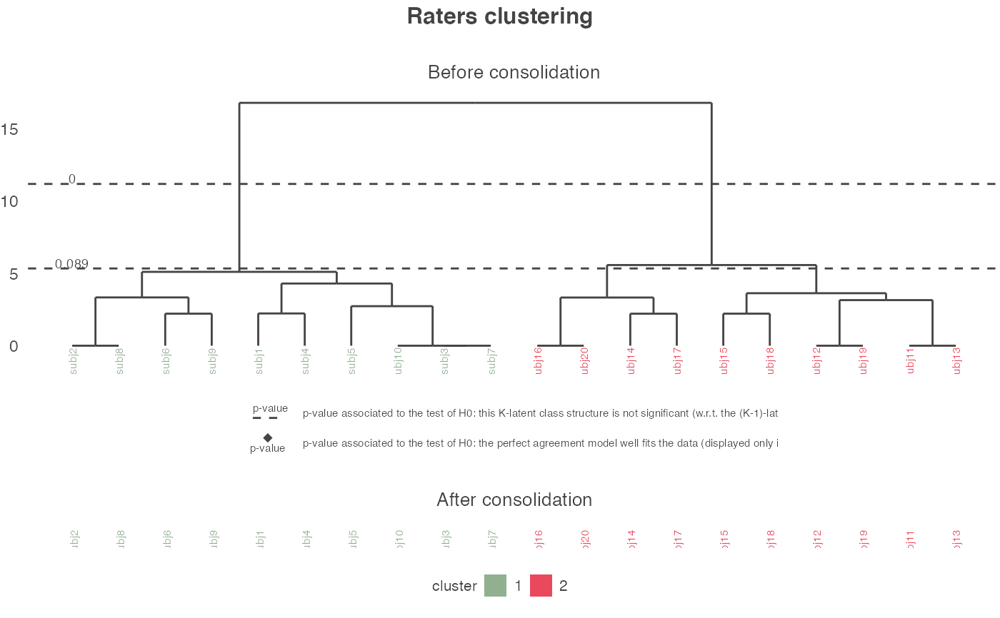
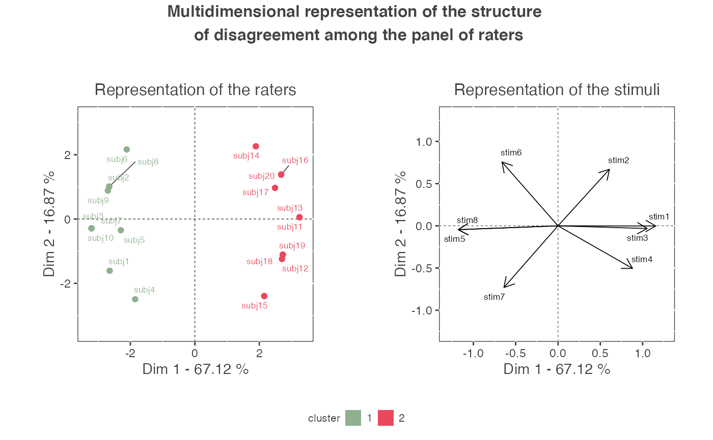
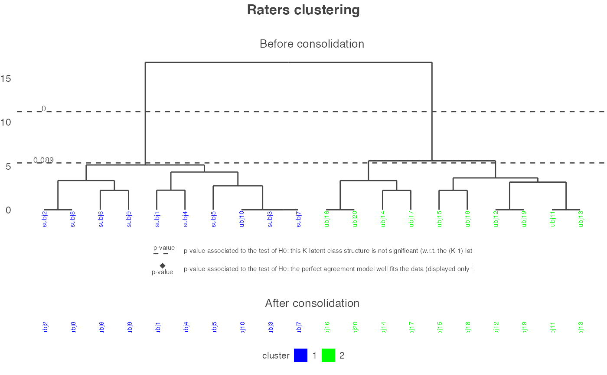
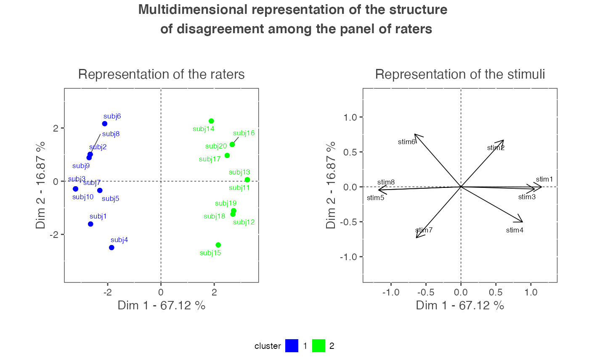

plot_agreeclust.RdDraws the graphs representing the structure of disagreement among the set of ratings. Tunning parameters such as the color of the clusters or the axis of PCA to be plotted can be specified.
plot_agreeclust(res, choice = "all", interact = FALSE, col_clust = NULL, axis = c(1, 2), name_rater = "rater", ext_dev_Rstudio = FALSE, vignette = FALSE)
| res | An object of class agreeclust returned by the functions of the package. |
|---|---|
| choice | A character element specifying the graphs to be plotted ('seg' for the representation of the segmentation process (dendrogram + partitioning if a consolidation process has been implemented), 'mul' for the multidimensional representation of the structure of disagreement (PCA), 'all' for both representations. By default, both representations are plotted.) |
| interact | A boolean specifying if the graphical outputs should be interactive (with plotly) or not. |
| col_clust | A vector with as many color as clusters of raters. Colors can be specified by a character such as "blue" or by a hexadecimal code such as "#0D10D5". All hexadecimal codes can be found at http://htmlcolorcodes.com. By default, no colors are specified and default colors are used. |
| axis | A length 2 numeric vector specifying the PCA components to be plotted. By default, the first 2 components are plotted. |
| name_rater | A character element indicating how the raters should be named (e.g. "rater", "participant", "psychologists") |
| ext_dev_Rstudio | A boolean specifying if the graphical outputs should be plotted in the Rstudio plot pane or not. |
| vignette | A boolean specifying if the graphical outputs are plotted in a vignette or not. |
Returns the graphical representations
data(binary_data_for_example) res_pedag <- get_agreeclust_bin(dta = binary_data_for_example, id_info_rater = 9 : nrow(binary_data_for_example), type_info_rater = c(rep("cat", 2), "cont"), id_info_stim = 21 : ncol(binary_data_for_example), type_info_stim = c(rep("cont", 4), "cat"), paral_null = FALSE )#>#>#>#>#>#>#>#>#>#>#>#> Warning: glm.fit: fitted probabilities numerically 0 or 1 occurred#> Warning: glm.fit: fitted probabilities numerically 0 or 1 occurred#>#> Warning: glm.fit: fitted probabilities numerically 0 or 1 occurred#> Warning: glm.fit: fitted probabilities numerically 0 or 1 occurred#>#>#> Warning: glm.fit: fitted probabilities numerically 0 or 1 occurred#> Warning: glm.fit: fitted probabilities numerically 0 or 1 occurred#>#>#>#> Warning: glm.fit: fitted probabilities numerically 0 or 1 occurred#> Warning: glm.fit: fitted probabilities numerically 0 or 1 occurred#>#>#> Warning: glm.fit: fitted probabilities numerically 0 or 1 occurred#> Warning: glm.fit: fitted probabilities numerically 0 or 1 occurred#>#> Warning: glm.fit: fitted probabilities numerically 0 or 1 occurred#> Warning: glm.fit: fitted probabilities numerically 0 or 1 occurred#>#>#> Warning: glm.fit: fitted probabilities numerically 0 or 1 occurred#> Warning: glm.fit: fitted probabilities numerically 0 or 1 occurred#>#> Warning: glm.fit: fitted probabilities numerically 0 or 1 occurred#> Warning: glm.fit: fitted probabilities numerically 0 or 1 occurred#>#>#> Warning: glm.fit: fitted probabilities numerically 0 or 1 occurred#> Warning: glm.fit: fitted probabilities numerically 0 or 1 occurred#>#>#>#>#> Warning: glm.fit: fitted probabilities numerically 0 or 1 occurred#> Warning: glm.fit: fitted probabilities numerically 0 or 1 occurred#>#> Warning: glm.fit: fitted probabilities numerically 0 or 1 occurred#> Warning: glm.fit: fitted probabilities numerically 0 or 1 occurred#>#>#>#> Warning: glm.fit: fitted probabilities numerically 0 or 1 occurred#> Warning: glm.fit: fitted probabilities numerically 0 or 1 occurred#>#>#>#> Warning: glm.fit: fitted probabilities numerically 0 or 1 occurred#> Warning: glm.fit: fitted probabilities numerically 0 or 1 occurred#>#>#>#>#> Warning: glm.fit: fitted probabilities numerically 0 or 1 occurred#> Warning: glm.fit: fitted probabilities numerically 0 or 1 occurred#>#> Warning: glm.fit: fitted probabilities numerically 0 or 1 occurred#> Warning: glm.fit: fitted probabilities numerically 0 or 1 occurred#>#>#> Warning: glm.fit: fitted probabilities numerically 0 or 1 occurred#> Warning: glm.fit: fitted probabilities numerically 0 or 1 occurred#>#>#>#>#>#>#>#> Warning: glm.fit: fitted probabilities numerically 0 or 1 occurred#> Warning: glm.fit: fitted probabilities numerically 0 or 1 occurred#>#>#>#> Warning: glm.fit: fitted probabilities numerically 0 or 1 occurred#> Warning: glm.fit: fitted probabilities numerically 0 or 1 occurred#>#> Warning: glm.fit: fitted probabilities numerically 0 or 1 occurred#> Warning: glm.fit: fitted probabilities numerically 0 or 1 occurred#>#>#>#>#> Warning: glm.fit: fitted probabilities numerically 0 or 1 occurred#> Warning: glm.fit: fitted probabilities numerically 0 or 1 occurred#>#>#>#> Warning: glm.fit: fitted probabilities numerically 0 or 1 occurred#> Warning: glm.fit: fitted probabilities numerically 0 or 1 occurred#>#> Warning: glm.fit: fitted probabilities numerically 0 or 1 occurred#> Warning: glm.fit: fitted probabilities numerically 0 or 1 occurred#>#>#> Warning: glm.fit: fitted probabilities numerically 0 or 1 occurred#> Warning: glm.fit: fitted probabilities numerically 0 or 1 occurred#>#>#> Warning: glm.fit: fitted probabilities numerically 0 or 1 occurred#> Warning: glm.fit: fitted probabilities numerically 0 or 1 occurred#>#>#>#>#>#> Warning: glm.fit: fitted probabilities numerically 0 or 1 occurred#> Warning: glm.fit: fitted probabilities numerically 0 or 1 occurred#>#> Warning: glm.fit: fitted probabilities numerically 0 or 1 occurred#> Warning: glm.fit: fitted probabilities numerically 0 or 1 occurred#>#>#> Warning: glm.fit: fitted probabilities numerically 0 or 1 occurred#> Warning: glm.fit: fitted probabilities numerically 0 or 1 occurred#>#>#>#> Warning: glm.fit: fitted probabilities numerically 0 or 1 occurred#> Warning: glm.fit: fitted probabilities numerically 0 or 1 occurred#>#> Warning: glm.fit: fitted probabilities numerically 0 or 1 occurred#> Warning: glm.fit: fitted probabilities numerically 0 or 1 occurred#>#>#>#> Warning: glm.fit: fitted probabilities numerically 0 or 1 occurred#> Warning: glm.fit: fitted probabilities numerically 0 or 1 occurred#>#>#> Warning: glm.fit: fitted probabilities numerically 0 or 1 occurred#> Warning: glm.fit: fitted probabilities numerically 0 or 1 occurred#>#> Warning: glm.fit: fitted probabilities numerically 0 or 1 occurred#> Warning: glm.fit: fitted probabilities numerically 0 or 1 occurred#>#>#>#> Warning: glm.fit: fitted probabilities numerically 0 or 1 occurred#> Warning: glm.fit: fitted probabilities numerically 0 or 1 occurred#>#> Warning: glm.fit: fitted probabilities numerically 0 or 1 occurred#> Warning: glm.fit: fitted probabilities numerically 0 or 1 occurred#>#> Warning: glm.fit: fitted probabilities numerically 0 or 1 occurred#> Warning: glm.fit: fitted probabilities numerically 0 or 1 occurred#>#> Warning: glm.fit: fitted probabilities numerically 0 or 1 occurred#> Warning: glm.fit: fitted probabilities numerically 0 or 1 occurred#>#> Warning: glm.fit: fitted probabilities numerically 0 or 1 occurred#> Warning: glm.fit: fitted probabilities numerically 0 or 1 occurred#>#>#>#>#>#>#> Warning: glm.fit: fitted probabilities numerically 0 or 1 occurred#> Warning: glm.fit: fitted probabilities numerically 0 or 1 occurred#>#> Warning: glm.fit: fitted probabilities numerically 0 or 1 occurred#> Warning: glm.fit: fitted probabilities numerically 0 or 1 occurred#>#>#>#> Warning: glm.fit: fitted probabilities numerically 0 or 1 occurred#> Warning: glm.fit: fitted probabilities numerically 0 or 1 occurred#>#>#> Warning: glm.fit: fitted probabilities numerically 0 or 1 occurred#> Warning: glm.fit: fitted probabilities numerically 0 or 1 occurred#>#>#> Warning: glm.fit: fitted probabilities numerically 0 or 1 occurred#> Warning: glm.fit: fitted probabilities numerically 0 or 1 occurred#>#>#>#>#>#> Warning: glm.fit: fitted probabilities numerically 0 or 1 occurred#> Warning: glm.fit: fitted probabilities numerically 0 or 1 occurred#>#> Warning: glm.fit: fitted probabilities numerically 0 or 1 occurred#> Warning: glm.fit: fitted probabilities numerically 0 or 1 occurred#>#>#>#>#> Warning: glm.fit: fitted probabilities numerically 0 or 1 occurred#> Warning: glm.fit: fitted probabilities numerically 0 or 1 occurred#>#>#>#>#> Warning: glm.fit: fitted probabilities numerically 0 or 1 occurred#> Warning: glm.fit: fitted probabilities numerically 0 or 1 occurred#>#> Warning: glm.fit: fitted probabilities numerically 0 or 1 occurred#> Warning: glm.fit: fitted probabilities numerically 0 or 1 occurred#>#>#> Warning: glm.fit: fitted probabilities numerically 0 or 1 occurred#> Warning: glm.fit: fitted probabilities numerically 0 or 1 occurred#>#>#>#> Warning: glm.fit: fitted probabilities numerically 0 or 1 occurred#> Warning: glm.fit: fitted probabilities numerically 0 or 1 occurred#>#>#>#>#>#> Warning: glm.fit: fitted probabilities numerically 0 or 1 occurred#> Warning: glm.fit: fitted probabilities numerically 0 or 1 occurred#>#>#>#>#>#>#>#>#> Warning: glm.fit: fitted probabilities numerically 0 or 1 occurred#> Warning: glm.fit: fitted probabilities numerically 0 or 1 occurred#>#> Warning: glm.fit: fitted probabilities numerically 0 or 1 occurred#> Warning: glm.fit: fitted probabilities numerically 0 or 1 occurred#>#> Warning: glm.fit: fitted probabilities numerically 0 or 1 occurred#> Warning: glm.fit: fitted probabilities numerically 0 or 1 occurred#>#>#>#>#> Warning: glm.fit: fitted probabilities numerically 0 or 1 occurred#> Warning: glm.fit: fitted probabilities numerically 0 or 1 occurred#>#> Warning: glm.fit: fitted probabilities numerically 0 or 1 occurred#> Warning: glm.fit: fitted probabilities numerically 0 or 1 occurred#>#>#>#>#> Warning: glm.fit: fitted probabilities numerically 0 or 1 occurred#> Warning: glm.fit: fitted probabilities numerically 0 or 1 occurred#>#>#> Warning: glm.fit: fitted probabilities numerically 0 or 1 occurred#> Warning: glm.fit: fitted probabilities numerically 0 or 1 occurred#>#> Warning: glm.fit: fitted probabilities numerically 0 or 1 occurred#> Warning: glm.fit: fitted probabilities numerically 0 or 1 occurred#>#>#>#>#>#> Warning: glm.fit: fitted probabilities numerically 0 or 1 occurred#> Warning: glm.fit: fitted probabilities numerically 0 or 1 occurred#>#>#>#> Warning: glm.fit: fitted probabilities numerically 0 or 1 occurred#> Warning: glm.fit: fitted probabilities numerically 0 or 1 occurred#>#>#>#> Warning: glm.fit: fitted probabilities numerically 0 or 1 occurred#> Warning: glm.fit: fitted probabilities numerically 0 or 1 occurred#>#>#>#>#>#> Warning: glm.fit: fitted probabilities numerically 0 or 1 occurred#> Warning: glm.fit: fitted probabilities numerically 0 or 1 occurred#>#>#> Warning: glm.fit: fitted probabilities numerically 0 or 1 occurred#> Warning: glm.fit: fitted probabilities numerically 0 or 1 occurred#>#>#>#>#>#>#>#>#> Warning: glm.fit: fitted probabilities numerically 0 or 1 occurred#> Warning: glm.fit: fitted probabilities numerically 0 or 1 occurred#>#>#> Warning: glm.fit: fitted probabilities numerically 0 or 1 occurred#> Warning: glm.fit: fitted probabilities numerically 0 or 1 occurred#>#>#>#>#>#>#>#>#>#>#>#>#> Warning: glm.fit: fitted probabilities numerically 0 or 1 occurred#> Warning: glm.fit: fitted probabilities numerically 0 or 1 occurred#>#>#> Warning: glm.fit: fitted probabilities numerically 0 or 1 occurred#> Warning: glm.fit: fitted probabilities numerically 0 or 1 occurred#>#>#>#>#>#>#>#>#>#> Warning: glm.fit: fitted probabilities numerically 0 or 1 occurred#> Warning: glm.fit: fitted probabilities numerically 0 or 1 occurred#>#> Warning: glm.fit: fitted probabilities numerically 0 or 1 occurred#> Warning: glm.fit: fitted probabilities numerically 0 or 1 occurred#>#>#> Warning: glm.fit: fitted probabilities numerically 0 or 1 occurred#> Warning: glm.fit: fitted probabilities numerically 0 or 1 occurred#>#> Warning: glm.fit: fitted probabilities numerically 0 or 1 occurred#> Warning: glm.fit: fitted probabilities numerically 0 or 1 occurred#>#> Warning: glm.fit: fitted probabilities numerically 0 or 1 occurred#> Warning: glm.fit: fitted probabilities numerically 0 or 1 occurred#>#>#>#> Warning: glm.fit: fitted probabilities numerically 0 or 1 occurred#> Warning: glm.fit: fitted probabilities numerically 0 or 1 occurred#>#>#>#> Warning: glm.fit: fitted probabilities numerically 0 or 1 occurred#> Warning: glm.fit: fitted probabilities numerically 0 or 1 occurred#>#>#>#> Warning: glm.fit: fitted probabilities numerically 0 or 1 occurred#> Warning: glm.fit: fitted probabilities numerically 0 or 1 occurred#>#>#>#>#>#>#> Warning: glm.fit: fitted probabilities numerically 0 or 1 occurred#> Warning: glm.fit: fitted probabilities numerically 0 or 1 occurred#>#> Warning: glm.fit: fitted probabilities numerically 0 or 1 occurred#> Warning: glm.fit: fitted probabilities numerically 0 or 1 occurred#>#>#>#>#>#>#> Warning: glm.fit: fitted probabilities numerically 0 or 1 occurred#> Warning: glm.fit: fitted probabilities numerically 0 or 1 occurred#>#> Warning: glm.fit: fitted probabilities numerically 0 or 1 occurred#> Warning: glm.fit: fitted probabilities numerically 0 or 1 occurred#>#>#>#> Warning: glm.fit: fitted probabilities numerically 0 or 1 occurred#> Warning: glm.fit: fitted probabilities numerically 0 or 1 occurred#>#> Warning: glm.fit: fitted probabilities numerically 0 or 1 occurred#> Warning: glm.fit: fitted probabilities numerically 0 or 1 occurred#>#>#>#> Warning: glm.fit: fitted probabilities numerically 0 or 1 occurred#> Warning: glm.fit: fitted probabilities numerically 0 or 1 occurred#>#>#> Warning: glm.fit: fitted probabilities numerically 0 or 1 occurred#> Warning: glm.fit: fitted probabilities numerically 0 or 1 occurred#>#>#> Warning: glm.fit: fitted probabilities numerically 0 or 1 occurred#> Warning: glm.fit: fitted probabilities numerically 0 or 1 occurred#>#> Warning: glm.fit: fitted probabilities numerically 0 or 1 occurred#> Warning: glm.fit: fitted probabilities numerically 0 or 1 occurred#>#>#>#>#>#> Warning: glm.fit: fitted probabilities numerically 0 or 1 occurred#> Warning: glm.fit: fitted probabilities numerically 0 or 1 occurred#>#> Warning: glm.fit: fitted probabilities numerically 0 or 1 occurred#> Warning: glm.fit: fitted probabilities numerically 0 or 1 occurred#>#>#>#>#> Warning: glm.fit: fitted probabilities numerically 0 or 1 occurred#> Warning: glm.fit: fitted probabilities numerically 0 or 1 occurred#> Warning: glm.fit: fitted probabilities numerically 0 or 1 occurred#> Warning: glm.fit: fitted probabilities numerically 0 or 1 occurred#>#> Warning: glm.fit: fitted probabilities numerically 0 or 1 occurred#> Warning: glm.fit: fitted probabilities numerically 0 or 1 occurred#> Warning: glm.fit: fitted probabilities numerically 0 or 1 occurred#> Warning: glm.fit: fitted probabilities numerically 0 or 1 occurred#>#> Warning: glm.fit: fitted probabilities numerically 0 or 1 occurred#> Warning: glm.fit: fitted probabilities numerically 0 or 1 occurred#> Warning: glm.fit: fitted probabilities numerically 0 or 1 occurred#> Warning: glm.fit: fitted probabilities numerically 0 or 1 occurred#>#> Warning: glm.fit: fitted probabilities numerically 0 or 1 occurred#> Warning: glm.fit: fitted probabilities numerically 0 or 1 occurred#> Warning: glm.fit: fitted probabilities numerically 0 or 1 occurred#> Warning: glm.fit: fitted probabilities numerically 0 or 1 occurred#>#> Warning: glm.fit: fitted probabilities numerically 0 or 1 occurred#> Warning: glm.fit: fitted probabilities numerically 0 or 1 occurred#> Warning: glm.fit: fitted probabilities numerically 0 or 1 occurred#> Warning: glm.fit: fitted probabilities numerically 0 or 1 occurred#>#> Warning: glm.fit: algorithm did not converge#> Warning: glm.fit: fitted probabilities numerically 0 or 1 occurred#> Warning: glm.fit: algorithm did not converge#> Warning: glm.fit: fitted probabilities numerically 0 or 1 occurred#> Warning: glm.fit: fitted probabilities numerically 0 or 1 occurred#> Warning: glm.fit: fitted probabilities numerically 0 or 1 occurred#>#> Warning: glm.fit: fitted probabilities numerically 0 or 1 occurred#> Warning: glm.fit: fitted probabilities numerically 0 or 1 occurred#> Warning: glm.fit: algorithm did not converge#> Warning: glm.fit: fitted probabilities numerically 0 or 1 occurred#> Warning: glm.fit: fitted probabilities numerically 0 or 1 occurred#>#> Warning: glm.fit: fitted probabilities numerically 0 or 1 occurred#> Warning: glm.fit: fitted probabilities numerically 0 or 1 occurred#> Warning: glm.fit: fitted probabilities numerically 0 or 1 occurred#> Warning: glm.fit: fitted probabilities numerically 0 or 1 occurred#>#> Warning: glm.fit: fitted probabilities numerically 0 or 1 occurred#> Warning: glm.fit: fitted probabilities numerically 0 or 1 occurred#> Warning: glm.fit: fitted probabilities numerically 0 or 1 occurred#> Warning: glm.fit: fitted probabilities numerically 0 or 1 occurred#>#> Warning: glm.fit: fitted probabilities numerically 0 or 1 occurred#> Warning: glm.fit: fitted probabilities numerically 0 or 1 occurred#> Warning: glm.fit: fitted probabilities numerically 0 or 1 occurred#> Warning: glm.fit: fitted probabilities numerically 0 or 1 occurred#>#> Warning: glm.fit: fitted probabilities numerically 0 or 1 occurred#> Warning: glm.fit: fitted probabilities numerically 0 or 1 occurred#> Warning: glm.fit: fitted probabilities numerically 0 or 1 occurred#> Warning: glm.fit: fitted probabilities numerically 0 or 1 occurred#>#> Warning: glm.fit: fitted probabilities numerically 0 or 1 occurred#> Warning: glm.fit: fitted probabilities numerically 0 or 1 occurred#> Warning: glm.fit: fitted probabilities numerically 0 or 1 occurred#> Warning: glm.fit: fitted probabilities numerically 0 or 1 occurred#>#> Warning: glm.fit: fitted probabilities numerically 0 or 1 occurred#> Warning: glm.fit: fitted probabilities numerically 0 or 1 occurred#> Warning: glm.fit: fitted probabilities numerically 0 or 1 occurred#> Warning: glm.fit: fitted probabilities numerically 0 or 1 occurred#>#> Warning: glm.fit: algorithm did not converge#> Warning: glm.fit: fitted probabilities numerically 0 or 1 occurred#> Warning: glm.fit: fitted probabilities numerically 0 or 1 occurred#> Warning: glm.fit: fitted probabilities numerically 0 or 1 occurred#> Warning: glm.fit: fitted probabilities numerically 0 or 1 occurred#>#> Warning: glm.fit: fitted probabilities numerically 0 or 1 occurred#> Warning: glm.fit: fitted probabilities numerically 0 or 1 occurred#> Warning: glm.fit: fitted probabilities numerically 0 or 1 occurred#> Warning: glm.fit: fitted probabilities numerically 0 or 1 occurred#>#> Warning: glm.fit: fitted probabilities numerically 0 or 1 occurred#> Warning: glm.fit: fitted probabilities numerically 0 or 1 occurred#> Warning: glm.fit: fitted probabilities numerically 0 or 1 occurred#> Warning: glm.fit: fitted probabilities numerically 0 or 1 occurred#>#> Warning: glm.fit: algorithm did not converge#> Warning: glm.fit: fitted probabilities numerically 0 or 1 occurred#> Warning: glm.fit: algorithm did not converge#> Warning: glm.fit: fitted probabilities numerically 0 or 1 occurred#> Warning: glm.fit: algorithm did not converge#> Warning: glm.fit: fitted probabilities numerically 0 or 1 occurred#> Warning: glm.fit: fitted probabilities numerically 0 or 1 occurred#>#> Warning: glm.fit: fitted probabilities numerically 0 or 1 occurred#> Warning: glm.fit: fitted probabilities numerically 0 or 1 occurred#> Warning: glm.fit: fitted probabilities numerically 0 or 1 occurred#> Warning: glm.fit: fitted probabilities numerically 0 or 1 occurred#>#> Warning: glm.fit: fitted probabilities numerically 0 or 1 occurred#> Warning: glm.fit: fitted probabilities numerically 0 or 1 occurred#> Warning: glm.fit: algorithm did not converge#> Warning: glm.fit: fitted probabilities numerically 0 or 1 occurred#> Warning: glm.fit: fitted probabilities numerically 0 or 1 occurred#>#> Warning: glm.fit: fitted probabilities numerically 0 or 1 occurred#> Warning: glm.fit: fitted probabilities numerically 0 or 1 occurred#> Warning: glm.fit: fitted probabilities numerically 0 or 1 occurred#> Warning: glm.fit: fitted probabilities numerically 0 or 1 occurred#>#> Warning: glm.fit: fitted probabilities numerically 0 or 1 occurred#> Warning: glm.fit: fitted probabilities numerically 0 or 1 occurred#> Warning: glm.fit: fitted probabilities numerically 0 or 1 occurred#> Warning: glm.fit: fitted probabilities numerically 0 or 1 occurred#>#> Warning: glm.fit: fitted probabilities numerically 0 or 1 occurred#> Warning: glm.fit: fitted probabilities numerically 0 or 1 occurred#> Warning: glm.fit: fitted probabilities numerically 0 or 1 occurred#> Warning: glm.fit: fitted probabilities numerically 0 or 1 occurred#>#> Warning: glm.fit: fitted probabilities numerically 0 or 1 occurred#> Warning: glm.fit: fitted probabilities numerically 0 or 1 occurred#> Warning: glm.fit: fitted probabilities numerically 0 or 1 occurred#> Warning: glm.fit: fitted probabilities numerically 0 or 1 occurred#>#> Warning: glm.fit: algorithm did not converge#> Warning: glm.fit: fitted probabilities numerically 0 or 1 occurred#> Warning: glm.fit: fitted probabilities numerically 0 or 1 occurred#> Warning: glm.fit: fitted probabilities numerically 0 or 1 occurred#> Warning: glm.fit: fitted probabilities numerically 0 or 1 occurred#>#> Warning: glm.fit: fitted probabilities numerically 0 or 1 occurred#> Warning: glm.fit: fitted probabilities numerically 0 or 1 occurred#> Warning: glm.fit: fitted probabilities numerically 0 or 1 occurred#> Warning: glm.fit: fitted probabilities numerically 0 or 1 occurred#>#> Warning: glm.fit: fitted probabilities numerically 0 or 1 occurred#> Warning: glm.fit: fitted probabilities numerically 0 or 1 occurred#> Warning: glm.fit: fitted probabilities numerically 0 or 1 occurred#> Warning: glm.fit: fitted probabilities numerically 0 or 1 occurred#>#> Warning: glm.fit: fitted probabilities numerically 0 or 1 occurred#> Warning: glm.fit: fitted probabilities numerically 0 or 1 occurred#> Warning: glm.fit: algorithm did not converge#> Warning: glm.fit: fitted probabilities numerically 0 or 1 occurred#> Warning: glm.fit: fitted probabilities numerically 0 or 1 occurred#>#> Warning: glm.fit: algorithm did not converge#> Warning: glm.fit: fitted probabilities numerically 0 or 1 occurred#> Warning: glm.fit: fitted probabilities numerically 0 or 1 occurred#> Warning: glm.fit: fitted probabilities numerically 0 or 1 occurred#> Warning: glm.fit: fitted probabilities numerically 0 or 1 occurred#>#> Warning: glm.fit: fitted probabilities numerically 0 or 1 occurred#> Warning: glm.fit: fitted probabilities numerically 0 or 1 occurred#> Warning: glm.fit: fitted probabilities numerically 0 or 1 occurred#> Warning: glm.fit: fitted probabilities numerically 0 or 1 occurred#>#> Warning: glm.fit: algorithm did not converge#> Warning: glm.fit: fitted probabilities numerically 0 or 1 occurred#> Warning: glm.fit: fitted probabilities numerically 0 or 1 occurred#> Warning: glm.fit: fitted probabilities numerically 0 or 1 occurred#> Warning: glm.fit: fitted probabilities numerically 0 or 1 occurred#>#> Warning: glm.fit: fitted probabilities numerically 0 or 1 occurred#> Warning: glm.fit: fitted probabilities numerically 0 or 1 occurred#> Warning: glm.fit: algorithm did not converge#> Warning: glm.fit: fitted probabilities numerically 0 or 1 occurred#> Warning: glm.fit: fitted probabilities numerically 0 or 1 occurred#>#> Warning: glm.fit: fitted probabilities numerically 0 or 1 occurred#> Warning: glm.fit: fitted probabilities numerically 0 or 1 occurred#> Warning: glm.fit: fitted probabilities numerically 0 or 1 occurred#> Warning: glm.fit: fitted probabilities numerically 0 or 1 occurred#>#> Warning: glm.fit: fitted probabilities numerically 0 or 1 occurred#> Warning: glm.fit: fitted probabilities numerically 0 or 1 occurred#> Warning: glm.fit: fitted probabilities numerically 0 or 1 occurred#> Warning: glm.fit: fitted probabilities numerically 0 or 1 occurred#>#> Warning: glm.fit: fitted probabilities numerically 0 or 1 occurred#> Warning: glm.fit: fitted probabilities numerically 0 or 1 occurred#> Warning: glm.fit: fitted probabilities numerically 0 or 1 occurred#> Warning: glm.fit: fitted probabilities numerically 0 or 1 occurred#>#> Warning: glm.fit: fitted probabilities numerically 0 or 1 occurred#> Warning: glm.fit: fitted probabilities numerically 0 or 1 occurred#> Warning: glm.fit: fitted probabilities numerically 0 or 1 occurred#> Warning: glm.fit: fitted probabilities numerically 0 or 1 occurred#>#> Warning: glm.fit: fitted probabilities numerically 0 or 1 occurred#> Warning: glm.fit: fitted probabilities numerically 0 or 1 occurred#> Warning: glm.fit: fitted probabilities numerically 0 or 1 occurred#> Warning: glm.fit: fitted probabilities numerically 0 or 1 occurred#>#> Warning: glm.fit: fitted probabilities numerically 0 or 1 occurred#> Warning: glm.fit: fitted probabilities numerically 0 or 1 occurred#> Warning: glm.fit: fitted probabilities numerically 0 or 1 occurred#> Warning: glm.fit: fitted probabilities numerically 0 or 1 occurred#>#> Warning: glm.fit: fitted probabilities numerically 0 or 1 occurred#> Warning: glm.fit: fitted probabilities numerically 0 or 1 occurred#> Warning: glm.fit: fitted probabilities numerically 0 or 1 occurred#> Warning: glm.fit: fitted probabilities numerically 0 or 1 occurred#>#> Warning: glm.fit: fitted probabilities numerically 0 or 1 occurred#> Warning: glm.fit: fitted probabilities numerically 0 or 1 occurred#> Warning: glm.fit: fitted probabilities numerically 0 or 1 occurred#> Warning: glm.fit: fitted probabilities numerically 0 or 1 occurred#>#> Warning: glm.fit: algorithm did not converge#> Warning: glm.fit: fitted probabilities numerically 0 or 1 occurred#> Warning: glm.fit: fitted probabilities numerically 0 or 1 occurred#> Warning: glm.fit: fitted probabilities numerically 0 or 1 occurred#> Warning: glm.fit: fitted probabilities numerically 0 or 1 occurred#>#> Warning: glm.fit: fitted probabilities numerically 0 or 1 occurred#> Warning: glm.fit: fitted probabilities numerically 0 or 1 occurred#> Warning: glm.fit: fitted probabilities numerically 0 or 1 occurred#> Warning: glm.fit: fitted probabilities numerically 0 or 1 occurred#>#> Warning: glm.fit: algorithm did not converge#> Warning: glm.fit: fitted probabilities numerically 0 or 1 occurred#> Warning: glm.fit: fitted probabilities numerically 0 or 1 occurred#> Warning: glm.fit: fitted probabilities numerically 0 or 1 occurred#> Warning: glm.fit: fitted probabilities numerically 0 or 1 occurred#>#> Warning: glm.fit: algorithm did not converge#> Warning: glm.fit: fitted probabilities numerically 0 or 1 occurred#> Warning: glm.fit: fitted probabilities numerically 0 or 1 occurred#> Warning: glm.fit: algorithm did not converge#> Warning: glm.fit: fitted probabilities numerically 0 or 1 occurred#> Warning: glm.fit: fitted probabilities numerically 0 or 1 occurred#>#> Warning: glm.fit: fitted probabilities numerically 0 or 1 occurred#> Warning: glm.fit: fitted probabilities numerically 0 or 1 occurred#> Warning: glm.fit: fitted probabilities numerically 0 or 1 occurred#> Warning: glm.fit: fitted probabilities numerically 0 or 1 occurred#>#> Warning: glm.fit: fitted probabilities numerically 0 or 1 occurred#> Warning: glm.fit: fitted probabilities numerically 0 or 1 occurred#> Warning: glm.fit: algorithm did not converge#> Warning: glm.fit: fitted probabilities numerically 0 or 1 occurred#> Warning: glm.fit: fitted probabilities numerically 0 or 1 occurred#>#> Warning: glm.fit: fitted probabilities numerically 0 or 1 occurred#> Warning: glm.fit: fitted probabilities numerically 0 or 1 occurred#> Warning: glm.fit: fitted probabilities numerically 0 or 1 occurred#> Warning: glm.fit: fitted probabilities numerically 0 or 1 occurred#>#> Warning: glm.fit: algorithm did not converge#> Warning: glm.fit: fitted probabilities numerically 0 or 1 occurred#> Warning: glm.fit: fitted probabilities numerically 0 or 1 occurred#> Warning: glm.fit: algorithm did not converge#> Warning: glm.fit: fitted probabilities numerically 0 or 1 occurred#> Warning: glm.fit: fitted probabilities numerically 0 or 1 occurred#>#> Warning: glm.fit: fitted probabilities numerically 0 or 1 occurred#> Warning: glm.fit: fitted probabilities numerically 0 or 1 occurred#> Warning: glm.fit: fitted probabilities numerically 0 or 1 occurred#> Warning: glm.fit: fitted probabilities numerically 0 or 1 occurred#>#> Warning: glm.fit: algorithm did not converge#> Warning: glm.fit: fitted probabilities numerically 0 or 1 occurred#> Warning: glm.fit: fitted probabilities numerically 0 or 1 occurred#> Warning: glm.fit: fitted probabilities numerically 0 or 1 occurred#> Warning: glm.fit: fitted probabilities numerically 0 or 1 occurred#>#> Warning: glm.fit: algorithm did not converge#> Warning: glm.fit: fitted probabilities numerically 0 or 1 occurred#> Warning: glm.fit: fitted probabilities numerically 0 or 1 occurred#> Warning: glm.fit: fitted probabilities numerically 0 or 1 occurred#> Warning: glm.fit: fitted probabilities numerically 0 or 1 occurred#>#> Warning: glm.fit: fitted probabilities numerically 0 or 1 occurred#> Warning: glm.fit: fitted probabilities numerically 0 or 1 occurred#> Warning: glm.fit: fitted probabilities numerically 0 or 1 occurred#> Warning: glm.fit: fitted probabilities numerically 0 or 1 occurred#>#> Warning: glm.fit: fitted probabilities numerically 0 or 1 occurred#> Warning: glm.fit: fitted probabilities numerically 0 or 1 occurred#> Warning: glm.fit: fitted probabilities numerically 0 or 1 occurred#> Warning: glm.fit: fitted probabilities numerically 0 or 1 occurred#>#> Warning: glm.fit: fitted probabilities numerically 0 or 1 occurred#> Warning: glm.fit: fitted probabilities numerically 0 or 1 occurred#> Warning: glm.fit: algorithm did not converge#> Warning: glm.fit: fitted probabilities numerically 0 or 1 occurred#> Warning: glm.fit: fitted probabilities numerically 0 or 1 occurred#>#> Warning: glm.fit: algorithm did not converge#> Warning: glm.fit: fitted probabilities numerically 0 or 1 occurred#> Warning: glm.fit: fitted probabilities numerically 0 or 1 occurred#> Warning: glm.fit: algorithm did not converge#> Warning: glm.fit: fitted probabilities numerically 0 or 1 occurred#> Warning: glm.fit: algorithm did not converge#> Warning: glm.fit: fitted probabilities numerically 0 or 1 occurred#>#> Warning: glm.fit: fitted probabilities numerically 0 or 1 occurred#> Warning: glm.fit: fitted probabilities numerically 0 or 1 occurred#> Warning: glm.fit: algorithm did not converge#> Warning: glm.fit: fitted probabilities numerically 0 or 1 occurred#> Warning: glm.fit: algorithm did not converge#> Warning: glm.fit: fitted probabilities numerically 0 or 1 occurred#>#> Warning: glm.fit: fitted probabilities numerically 0 or 1 occurred#> Warning: glm.fit: fitted probabilities numerically 0 or 1 occurred#> Warning: glm.fit: algorithm did not converge#> Warning: glm.fit: fitted probabilities numerically 0 or 1 occurred#> Warning: glm.fit: fitted probabilities numerically 0 or 1 occurred#>#> Warning: glm.fit: fitted probabilities numerically 0 or 1 occurred#> Warning: glm.fit: fitted probabilities numerically 0 or 1 occurred#> Warning: glm.fit: fitted probabilities numerically 0 or 1 occurred#> Warning: glm.fit: fitted probabilities numerically 0 or 1 occurred#>#> Warning: glm.fit: fitted probabilities numerically 0 or 1 occurred#> Warning: glm.fit: fitted probabilities numerically 0 or 1 occurred#> Warning: glm.fit: fitted probabilities numerically 0 or 1 occurred#> Warning: glm.fit: fitted probabilities numerically 0 or 1 occurred#>#> Warning: glm.fit: fitted probabilities numerically 0 or 1 occurred#> Warning: glm.fit: fitted probabilities numerically 0 or 1 occurred#> Warning: glm.fit: fitted probabilities numerically 0 or 1 occurred#> Warning: glm.fit: fitted probabilities numerically 0 or 1 occurred#>#> Warning: glm.fit: fitted probabilities numerically 0 or 1 occurred#> Warning: glm.fit: fitted probabilities numerically 0 or 1 occurred#> Warning: glm.fit: fitted probabilities numerically 0 or 1 occurred#> Warning: glm.fit: fitted probabilities numerically 0 or 1 occurred#>#> Warning: glm.fit: fitted probabilities numerically 0 or 1 occurred#> Warning: glm.fit: fitted probabilities numerically 0 or 1 occurred#> Warning: glm.fit: fitted probabilities numerically 0 or 1 occurred#> Warning: glm.fit: fitted probabilities numerically 0 or 1 occurred#>#> Warning: glm.fit: fitted probabilities numerically 0 or 1 occurred#> Warning: glm.fit: fitted probabilities numerically 0 or 1 occurred#> Warning: glm.fit: fitted probabilities numerically 0 or 1 occurred#> Warning: glm.fit: fitted probabilities numerically 0 or 1 occurred#>#> Warning: glm.fit: fitted probabilities numerically 0 or 1 occurred#> Warning: glm.fit: fitted probabilities numerically 0 or 1 occurred#> Warning: glm.fit: fitted probabilities numerically 0 or 1 occurred#> Warning: glm.fit: fitted probabilities numerically 0 or 1 occurred#>#> Warning: glm.fit: algorithm did not converge#> Warning: glm.fit: fitted probabilities numerically 0 or 1 occurred#> Warning: glm.fit: fitted probabilities numerically 0 or 1 occurred#> Warning: glm.fit: fitted probabilities numerically 0 or 1 occurred#> Warning: glm.fit: fitted probabilities numerically 0 or 1 occurred#>#> Warning: glm.fit: fitted probabilities numerically 0 or 1 occurred#> Warning: glm.fit: fitted probabilities numerically 0 or 1 occurred#> Warning: glm.fit: fitted probabilities numerically 0 or 1 occurred#> Warning: glm.fit: fitted probabilities numerically 0 or 1 occurred#>#> Warning: glm.fit: fitted probabilities numerically 0 or 1 occurred#> Warning: glm.fit: fitted probabilities numerically 0 or 1 occurred#> Warning: glm.fit: fitted probabilities numerically 0 or 1 occurred#> Warning: glm.fit: fitted probabilities numerically 0 or 1 occurred#>#> Warning: glm.fit: fitted probabilities numerically 0 or 1 occurred#> Warning: glm.fit: fitted probabilities numerically 0 or 1 occurred#> Warning: glm.fit: fitted probabilities numerically 0 or 1 occurred#> Warning: glm.fit: fitted probabilities numerically 0 or 1 occurred#>#> Warning: glm.fit: fitted probabilities numerically 0 or 1 occurred#> Warning: glm.fit: fitted probabilities numerically 0 or 1 occurred#> Warning: glm.fit: fitted probabilities numerically 0 or 1 occurred#> Warning: glm.fit: fitted probabilities numerically 0 or 1 occurred#>#> Warning: glm.fit: fitted probabilities numerically 0 or 1 occurred#> Warning: glm.fit: fitted probabilities numerically 0 or 1 occurred#> Warning: glm.fit: fitted probabilities numerically 0 or 1 occurred#> Warning: glm.fit: fitted probabilities numerically 0 or 1 occurred#>#> Warning: glm.fit: algorithm did not converge#> Warning: glm.fit: fitted probabilities numerically 0 or 1 occurred#> Warning: glm.fit: fitted probabilities numerically 0 or 1 occurred#> Warning: glm.fit: fitted probabilities numerically 0 or 1 occurred#> Warning: glm.fit: fitted probabilities numerically 0 or 1 occurred#>#> Warning: glm.fit: fitted probabilities numerically 0 or 1 occurred#> Warning: glm.fit: fitted probabilities numerically 0 or 1 occurred#> Warning: glm.fit: fitted probabilities numerically 0 or 1 occurred#> Warning: glm.fit: fitted probabilities numerically 0 or 1 occurred#>#> Warning: glm.fit: algorithm did not converge#> Warning: glm.fit: fitted probabilities numerically 0 or 1 occurred#> Warning: glm.fit: fitted probabilities numerically 0 or 1 occurred#> Warning: glm.fit: algorithm did not converge#> Warning: glm.fit: fitted probabilities numerically 0 or 1 occurred#> Warning: glm.fit: algorithm did not converge#> Warning: glm.fit: fitted probabilities numerically 0 or 1 occurred#>#> Warning: glm.fit: fitted probabilities numerically 0 or 1 occurred#> Warning: glm.fit: fitted probabilities numerically 0 or 1 occurred#> Warning: glm.fit: fitted probabilities numerically 0 or 1 occurred#> Warning: glm.fit: fitted probabilities numerically 0 or 1 occurred#>#> Warning: glm.fit: fitted probabilities numerically 0 or 1 occurred#> Warning: glm.fit: fitted probabilities numerically 0 or 1 occurred#> Warning: glm.fit: fitted probabilities numerically 0 or 1 occurred#> Warning: glm.fit: fitted probabilities numerically 0 or 1 occurred#>#> Warning: glm.fit: fitted probabilities numerically 0 or 1 occurred#> Warning: glm.fit: fitted probabilities numerically 0 or 1 occurred#> Warning: glm.fit: fitted probabilities numerically 0 or 1 occurred#> Warning: glm.fit: fitted probabilities numerically 0 or 1 occurred#>#> Warning: glm.fit: fitted probabilities numerically 0 or 1 occurred#> Warning: glm.fit: fitted probabilities numerically 0 or 1 occurred#> Warning: glm.fit: fitted probabilities numerically 0 or 1 occurred#> Warning: glm.fit: fitted probabilities numerically 0 or 1 occurred#>#> Warning: glm.fit: fitted probabilities numerically 0 or 1 occurred#> Warning: glm.fit: fitted probabilities numerically 0 or 1 occurred#> Warning: glm.fit: fitted probabilities numerically 0 or 1 occurred#> Warning: glm.fit: fitted probabilities numerically 0 or 1 occurred#>#> Warning: glm.fit: fitted probabilities numerically 0 or 1 occurred#> Warning: glm.fit: fitted probabilities numerically 0 or 1 occurred#> Warning: glm.fit: fitted probabilities numerically 0 or 1 occurred#> Warning: glm.fit: fitted probabilities numerically 0 or 1 occurred#>#> Warning: glm.fit: fitted probabilities numerically 0 or 1 occurred#> Warning: glm.fit: fitted probabilities numerically 0 or 1 occurred#> Warning: glm.fit: fitted probabilities numerically 0 or 1 occurred#> Warning: glm.fit: fitted probabilities numerically 0 or 1 occurred#>#> Warning: glm.fit: fitted probabilities numerically 0 or 1 occurred#> Warning: glm.fit: fitted probabilities numerically 0 or 1 occurred#> Warning: glm.fit: fitted probabilities numerically 0 or 1 occurred#> Warning: glm.fit: fitted probabilities numerically 0 or 1 occurred#>#> Warning: glm.fit: fitted probabilities numerically 0 or 1 occurred#> Warning: glm.fit: fitted probabilities numerically 0 or 1 occurred#> Warning: glm.fit: algorithm did not converge#> Warning: glm.fit: fitted probabilities numerically 0 or 1 occurred#> Warning: glm.fit: fitted probabilities numerically 0 or 1 occurred#>#> Warning: glm.fit: fitted probabilities numerically 0 or 1 occurred#> Warning: glm.fit: fitted probabilities numerically 0 or 1 occurred#> Warning: glm.fit: fitted probabilities numerically 0 or 1 occurred#> Warning: glm.fit: fitted probabilities numerically 0 or 1 occurred#>#> Warning: glm.fit: fitted probabilities numerically 0 or 1 occurred#> Warning: glm.fit: fitted probabilities numerically 0 or 1 occurred#> Warning: glm.fit: algorithm did not converge#> Warning: glm.fit: fitted probabilities numerically 0 or 1 occurred#> Warning: glm.fit: algorithm did not converge#> Warning: glm.fit: fitted probabilities numerically 0 or 1 occurred#>#> Warning: glm.fit: fitted probabilities numerically 0 or 1 occurred#> Warning: glm.fit: fitted probabilities numerically 0 or 1 occurred#> Warning: glm.fit: fitted probabilities numerically 0 or 1 occurred#> Warning: glm.fit: fitted probabilities numerically 0 or 1 occurred#>#> Warning: glm.fit: fitted probabilities numerically 0 or 1 occurred#> Warning: glm.fit: fitted probabilities numerically 0 or 1 occurred#> Warning: glm.fit: fitted probabilities numerically 0 or 1 occurred#> Warning: glm.fit: fitted probabilities numerically 0 or 1 occurred#>#> Warning: glm.fit: fitted probabilities numerically 0 or 1 occurred#> Warning: glm.fit: fitted probabilities numerically 0 or 1 occurred#> Warning: glm.fit: algorithm did not converge#> Warning: glm.fit: fitted probabilities numerically 0 or 1 occurred#> Warning: glm.fit: fitted probabilities numerically 0 or 1 occurred#>#> Warning: glm.fit: algorithm did not converge#> Warning: glm.fit: fitted probabilities numerically 0 or 1 occurred#> Warning: glm.fit: fitted probabilities numerically 0 or 1 occurred#> Warning: glm.fit: algorithm did not converge#> Warning: glm.fit: fitted probabilities numerically 0 or 1 occurred#> Warning: glm.fit: fitted probabilities numerically 0 or 1 occurred#>#> Warning: glm.fit: fitted probabilities numerically 0 or 1 occurred#> Warning: glm.fit: fitted probabilities numerically 0 or 1 occurred#> Warning: glm.fit: fitted probabilities numerically 0 or 1 occurred#> Warning: glm.fit: fitted probabilities numerically 0 or 1 occurred#>#> Warning: glm.fit: fitted probabilities numerically 0 or 1 occurred#> Warning: glm.fit: fitted probabilities numerically 0 or 1 occurred#> Warning: glm.fit: fitted probabilities numerically 0 or 1 occurred#> Warning: glm.fit: fitted probabilities numerically 0 or 1 occurred#>#> Warning: glm.fit: fitted probabilities numerically 0 or 1 occurred#> Warning: glm.fit: fitted probabilities numerically 0 or 1 occurred#> Warning: glm.fit: fitted probabilities numerically 0 or 1 occurred#> Warning: glm.fit: fitted probabilities numerically 0 or 1 occurred#>#> Warning: glm.fit: fitted probabilities numerically 0 or 1 occurred#> Warning: glm.fit: fitted probabilities numerically 0 or 1 occurred#> Warning: glm.fit: fitted probabilities numerically 0 or 1 occurred#> Warning: glm.fit: fitted probabilities numerically 0 or 1 occurred#>#> Warning: glm.fit: fitted probabilities numerically 0 or 1 occurred#> Warning: glm.fit: fitted probabilities numerically 0 or 1 occurred#> Warning: glm.fit: fitted probabilities numerically 0 or 1 occurred#> Warning: glm.fit: fitted probabilities numerically 0 or 1 occurred#>#> Warning: glm.fit: fitted probabilities numerically 0 or 1 occurred#> Warning: glm.fit: fitted probabilities numerically 0 or 1 occurred#> Warning: glm.fit: fitted probabilities numerically 0 or 1 occurred#> Warning: glm.fit: fitted probabilities numerically 0 or 1 occurred#>#> Warning: glm.fit: fitted probabilities numerically 0 or 1 occurred#> Warning: glm.fit: fitted probabilities numerically 0 or 1 occurred#> Warning: glm.fit: fitted probabilities numerically 0 or 1 occurred#> Warning: glm.fit: fitted probabilities numerically 0 or 1 occurred#>#> Warning: glm.fit: fitted probabilities numerically 0 or 1 occurred#> Warning: glm.fit: fitted probabilities numerically 0 or 1 occurred#> Warning: glm.fit: fitted probabilities numerically 0 or 1 occurred#> Warning: glm.fit: fitted probabilities numerically 0 or 1 occurred#>#> Warning: glm.fit: fitted probabilities numerically 0 or 1 occurred#> Warning: glm.fit: fitted probabilities numerically 0 or 1 occurred#> Warning: glm.fit: fitted probabilities numerically 0 or 1 occurred#> Warning: glm.fit: fitted probabilities numerically 0 or 1 occurred#>#> Warning: glm.fit: algorithm did not converge#> Warning: glm.fit: fitted probabilities numerically 0 or 1 occurred#> Warning: glm.fit: fitted probabilities numerically 0 or 1 occurred#> Warning: glm.fit: fitted probabilities numerically 0 or 1 occurred#> Warning: glm.fit: fitted probabilities numerically 0 or 1 occurred#>#> Warning: glm.fit: algorithm did not converge#> Warning: glm.fit: fitted probabilities numerically 0 or 1 occurred#> Warning: glm.fit: fitted probabilities numerically 0 or 1 occurred#> Warning: glm.fit: fitted probabilities numerically 0 or 1 occurred#> Warning: glm.fit: fitted probabilities numerically 0 or 1 occurred#>#> Warning: glm.fit: fitted probabilities numerically 0 or 1 occurred#> Warning: glm.fit: fitted probabilities numerically 0 or 1 occurred#> Warning: glm.fit: fitted probabilities numerically 0 or 1 occurred#> Warning: glm.fit: fitted probabilities numerically 0 or 1 occurred#>#> Warning: glm.fit: fitted probabilities numerically 0 or 1 occurred#> Warning: glm.fit: fitted probabilities numerically 0 or 1 occurred#> Warning: glm.fit: fitted probabilities numerically 0 or 1 occurred#> Warning: glm.fit: fitted probabilities numerically 0 or 1 occurred#>#> Warning: glm.fit: fitted probabilities numerically 0 or 1 occurred#> Warning: glm.fit: fitted probabilities numerically 0 or 1 occurred#> Warning: glm.fit: fitted probabilities numerically 0 or 1 occurred#> Warning: glm.fit: fitted probabilities numerically 0 or 1 occurred#>#> Warning: glm.fit: fitted probabilities numerically 0 or 1 occurred#> Warning: glm.fit: fitted probabilities numerically 0 or 1 occurred#> Warning: glm.fit: fitted probabilities numerically 0 or 1 occurred#> Warning: glm.fit: fitted probabilities numerically 0 or 1 occurred#>#> Warning: glm.fit: fitted probabilities numerically 0 or 1 occurred#> Warning: glm.fit: fitted probabilities numerically 0 or 1 occurred#> Warning: glm.fit: fitted probabilities numerically 0 or 1 occurred#> Warning: glm.fit: fitted probabilities numerically 0 or 1 occurred#>#> Warning: glm.fit: fitted probabilities numerically 0 or 1 occurred#> Warning: glm.fit: fitted probabilities numerically 0 or 1 occurred#> Warning: glm.fit: fitted probabilities numerically 0 or 1 occurred#> Warning: glm.fit: fitted probabilities numerically 0 or 1 occurred#>#> Warning: glm.fit: fitted probabilities numerically 0 or 1 occurred#> Warning: glm.fit: fitted probabilities numerically 0 or 1 occurred#> Warning: glm.fit: fitted probabilities numerically 0 or 1 occurred#> Warning: glm.fit: fitted probabilities numerically 0 or 1 occurred#>#> Warning: glm.fit: fitted probabilities numerically 0 or 1 occurred#> Warning: glm.fit: fitted probabilities numerically 0 or 1 occurred#> Warning: glm.fit: algorithm did not converge#> Warning: glm.fit: fitted probabilities numerically 0 or 1 occurred#> Warning: glm.fit: fitted probabilities numerically 0 or 1 occurred#>#> Warning: glm.fit: algorithm did not converge#> Warning: glm.fit: fitted probabilities numerically 0 or 1 occurred#> Warning: glm.fit: fitted probabilities numerically 0 or 1 occurred#> Warning: glm.fit: fitted probabilities numerically 0 or 1 occurred#> Warning: glm.fit: fitted probabilities numerically 0 or 1 occurred#>#> Warning: glm.fit: fitted probabilities numerically 0 or 1 occurred#> Warning: glm.fit: fitted probabilities numerically 0 or 1 occurred#> Warning: glm.fit: algorithm did not converge#> Warning: glm.fit: fitted probabilities numerically 0 or 1 occurred#> Warning: glm.fit: algorithm did not converge#> Warning: glm.fit: fitted probabilities numerically 0 or 1 occurred#>#> Warning: glm.fit: algorithm did not converge#> Warning: glm.fit: fitted probabilities numerically 0 or 1 occurred#> Warning: glm.fit: fitted probabilities numerically 0 or 1 occurred#> Warning: glm.fit: fitted probabilities numerically 0 or 1 occurred#> Warning: glm.fit: fitted probabilities numerically 0 or 1 occurred#>#> Warning: glm.fit: fitted probabilities numerically 0 or 1 occurred#> Warning: glm.fit: fitted probabilities numerically 0 or 1 occurred#> Warning: glm.fit: fitted probabilities numerically 0 or 1 occurred#> Warning: glm.fit: fitted probabilities numerically 0 or 1 occurred#>#> Warning: glm.fit: fitted probabilities numerically 0 or 1 occurred#> Warning: glm.fit: fitted probabilities numerically 0 or 1 occurred#> Warning: glm.fit: fitted probabilities numerically 0 or 1 occurred#> Warning: glm.fit: fitted probabilities numerically 0 or 1 occurred#>#> Warning: glm.fit: fitted probabilities numerically 0 or 1 occurred#> Warning: glm.fit: fitted probabilities numerically 0 or 1 occurred#> Warning: glm.fit: fitted probabilities numerically 0 or 1 occurred#> Warning: glm.fit: fitted probabilities numerically 0 or 1 occurred#>#> Warning: glm.fit: fitted probabilities numerically 0 or 1 occurred#> Warning: glm.fit: fitted probabilities numerically 0 or 1 occurred#> Warning: glm.fit: algorithm did not converge#> Warning: glm.fit: fitted probabilities numerically 0 or 1 occurred#> Warning: glm.fit: fitted probabilities numerically 0 or 1 occurred#>#> Warning: glm.fit: algorithm did not converge#> Warning: glm.fit: fitted probabilities numerically 0 or 1 occurred#> Warning: glm.fit: fitted probabilities numerically 0 or 1 occurred#> Warning: glm.fit: fitted probabilities numerically 0 or 1 occurred#> Warning: glm.fit: fitted probabilities numerically 0 or 1 occurred#>#> Warning: glm.fit: fitted probabilities numerically 0 or 1 occurred#> Warning: glm.fit: fitted probabilities numerically 0 or 1 occurred#> Warning: glm.fit: fitted probabilities numerically 0 or 1 occurred#> Warning: glm.fit: fitted probabilities numerically 0 or 1 occurred#>#> Warning: glm.fit: fitted probabilities numerically 0 or 1 occurred#> Warning: glm.fit: fitted probabilities numerically 0 or 1 occurred#> Warning: glm.fit: fitted probabilities numerically 0 or 1 occurred#> Warning: glm.fit: fitted probabilities numerically 0 or 1 occurred#>#> Warning: glm.fit: fitted probabilities numerically 0 or 1 occurred#> Warning: glm.fit: fitted probabilities numerically 0 or 1 occurred#> Warning: glm.fit: fitted probabilities numerically 0 or 1 occurred#> Warning: glm.fit: fitted probabilities numerically 0 or 1 occurred#>#> Warning: glm.fit: fitted probabilities numerically 0 or 1 occurred#> Warning: glm.fit: fitted probabilities numerically 0 or 1 occurred#> Warning: glm.fit: fitted probabilities numerically 0 or 1 occurred#> Warning: glm.fit: fitted probabilities numerically 0 or 1 occurred#>#> Warning: glm.fit: fitted probabilities numerically 0 or 1 occurred#> Warning: glm.fit: fitted probabilities numerically 0 or 1 occurred#> Warning: glm.fit: fitted probabilities numerically 0 or 1 occurred#> Warning: glm.fit: fitted probabilities numerically 0 or 1 occurred#>#> Warning: glm.fit: fitted probabilities numerically 0 or 1 occurred#> Warning: glm.fit: fitted probabilities numerically 0 or 1 occurred#> Warning: glm.fit: fitted probabilities numerically 0 or 1 occurred#> Warning: glm.fit: fitted probabilities numerically 0 or 1 occurred#>#> Warning: glm.fit: fitted probabilities numerically 0 or 1 occurred#> Warning: glm.fit: fitted probabilities numerically 0 or 1 occurred#> Warning: glm.fit: fitted probabilities numerically 0 or 1 occurred#> Warning: glm.fit: fitted probabilities numerically 0 or 1 occurred#>#> Warning: glm.fit: algorithm did not converge#> Warning: glm.fit: fitted probabilities numerically 0 or 1 occurred#> Warning: glm.fit: fitted probabilities numerically 0 or 1 occurred#> Warning: glm.fit: algorithm did not converge#> Warning: glm.fit: fitted probabilities numerically 0 or 1 occurred#> Warning: glm.fit: fitted probabilities numerically 0 or 1 occurred#>#> Warning: glm.fit: fitted probabilities numerically 0 or 1 occurred#> Warning: glm.fit: fitted probabilities numerically 0 or 1 occurred#> Warning: glm.fit: algorithm did not converge#> Warning: glm.fit: fitted probabilities numerically 0 or 1 occurred#> Warning: glm.fit: fitted probabilities numerically 0 or 1 occurred#>#> Warning: glm.fit: fitted probabilities numerically 0 or 1 occurred#> Warning: glm.fit: fitted probabilities numerically 0 or 1 occurred#> Warning: glm.fit: fitted probabilities numerically 0 or 1 occurred#> Warning: glm.fit: fitted probabilities numerically 0 or 1 occurred#>#> Warning: glm.fit: algorithm did not converge#> Warning: glm.fit: fitted probabilities numerically 0 or 1 occurred#> Warning: glm.fit: algorithm did not converge#> Warning: glm.fit: fitted probabilities numerically 0 or 1 occurred#> Warning: glm.fit: algorithm did not converge#> Warning: glm.fit: fitted probabilities numerically 0 or 1 occurred#> Warning: glm.fit: fitted probabilities numerically 0 or 1 occurred#>#> Warning: glm.fit: fitted probabilities numerically 0 or 1 occurred#> Warning: glm.fit: fitted probabilities numerically 0 or 1 occurred#> Warning: glm.fit: fitted probabilities numerically 0 or 1 occurred#> Warning: glm.fit: fitted probabilities numerically 0 or 1 occurred#>#> Warning: glm.fit: fitted probabilities numerically 0 or 1 occurred#> Warning: glm.fit: fitted probabilities numerically 0 or 1 occurred#> Warning: glm.fit: fitted probabilities numerically 0 or 1 occurred#> Warning: glm.fit: fitted probabilities numerically 0 or 1 occurred#>#> Warning: glm.fit: fitted probabilities numerically 0 or 1 occurred#> Warning: glm.fit: fitted probabilities numerically 0 or 1 occurred#> Warning: glm.fit: fitted probabilities numerically 0 or 1 occurred#> Warning: glm.fit: fitted probabilities numerically 0 or 1 occurred#>#> Warning: glm.fit: fitted probabilities numerically 0 or 1 occurred#> Warning: glm.fit: fitted probabilities numerically 0 or 1 occurred#> Warning: glm.fit: fitted probabilities numerically 0 or 1 occurred#> Warning: glm.fit: fitted probabilities numerically 0 or 1 occurred#>#> Warning: glm.fit: algorithm did not converge#> Warning: glm.fit: fitted probabilities numerically 0 or 1 occurred#> Warning: glm.fit: algorithm did not converge#> Warning: glm.fit: fitted probabilities numerically 0 or 1 occurred#> Warning: glm.fit: algorithm did not converge#> Warning: glm.fit: fitted probabilities numerically 0 or 1 occurred#> Warning: glm.fit: fitted probabilities numerically 0 or 1 occurred#>#> Warning: glm.fit: fitted probabilities numerically 0 or 1 occurred#> Warning: glm.fit: fitted probabilities numerically 0 or 1 occurred#> Warning: glm.fit: fitted probabilities numerically 0 or 1 occurred#> Warning: glm.fit: fitted probabilities numerically 0 or 1 occurred#>#> Warning: glm.fit: algorithm did not converge#> Warning: glm.fit: fitted probabilities numerically 0 or 1 occurred#> Warning: glm.fit: fitted probabilities numerically 0 or 1 occurred#> Warning: glm.fit: fitted probabilities numerically 0 or 1 occurred#> Warning: glm.fit: fitted probabilities numerically 0 or 1 occurred#>#> Warning: glm.fit: fitted probabilities numerically 0 or 1 occurred#> Warning: glm.fit: fitted probabilities numerically 0 or 1 occurred#> Warning: glm.fit: fitted probabilities numerically 0 or 1 occurred#> Warning: glm.fit: fitted probabilities numerically 0 or 1 occurred#>#> Warning: glm.fit: fitted probabilities numerically 0 or 1 occurred#> Warning: glm.fit: fitted probabilities numerically 0 or 1 occurred#> Warning: glm.fit: algorithm did not converge#> Warning: glm.fit: fitted probabilities numerically 0 or 1 occurred#> Warning: glm.fit: fitted probabilities numerically 0 or 1 occurred#>#> Warning: glm.fit: fitted probabilities numerically 0 or 1 occurred#> Warning: glm.fit: fitted probabilities numerically 0 or 1 occurred#> Warning: glm.fit: fitted probabilities numerically 0 or 1 occurred#> Warning: glm.fit: fitted probabilities numerically 0 or 1 occurred#>#> Warning: glm.fit: fitted probabilities numerically 0 or 1 occurred#> Warning: glm.fit: fitted probabilities numerically 0 or 1 occurred#> Warning: glm.fit: algorithm did not converge#> Warning: glm.fit: fitted probabilities numerically 0 or 1 occurred#> Warning: glm.fit: fitted probabilities numerically 0 or 1 occurred#>#> Warning: glm.fit: algorithm did not converge#> Warning: glm.fit: fitted probabilities numerically 0 or 1 occurred#> Warning: glm.fit: fitted probabilities numerically 0 or 1 occurred#> Warning: glm.fit: fitted probabilities numerically 0 or 1 occurred#> Warning: glm.fit: fitted probabilities numerically 0 or 1 occurred#>#> Warning: glm.fit: algorithm did not converge#> Warning: glm.fit: fitted probabilities numerically 0 or 1 occurred#> Warning: glm.fit: algorithm did not converge#> Warning: glm.fit: fitted probabilities numerically 0 or 1 occurred#> Warning: glm.fit: fitted probabilities numerically 0 or 1 occurred#> Warning: glm.fit: fitted probabilities numerically 0 or 1 occurred#>#> Warning: glm.fit: fitted probabilities numerically 0 or 1 occurred#> Warning: glm.fit: fitted probabilities numerically 0 or 1 occurred#> Warning: glm.fit: fitted probabilities numerically 0 or 1 occurred#> Warning: glm.fit: fitted probabilities numerically 0 or 1 occurred#>#> Warning: glm.fit: fitted probabilities numerically 0 or 1 occurred#> Warning: glm.fit: fitted probabilities numerically 0 or 1 occurred#> Warning: glm.fit: fitted probabilities numerically 0 or 1 occurred#> Warning: glm.fit: fitted probabilities numerically 0 or 1 occurred#>#> Warning: glm.fit: algorithm did not converge#> Warning: glm.fit: fitted probabilities numerically 0 or 1 occurred#> Warning: glm.fit: fitted probabilities numerically 0 or 1 occurred#> Warning: glm.fit: algorithm did not converge#> Warning: glm.fit: fitted probabilities numerically 0 or 1 occurred#> Warning: glm.fit: fitted probabilities numerically 0 or 1 occurred#>#> Warning: glm.fit: fitted probabilities numerically 0 or 1 occurred#> Warning: glm.fit: fitted probabilities numerically 0 or 1 occurred#> Warning: glm.fit: fitted probabilities numerically 0 or 1 occurred#> Warning: glm.fit: fitted probabilities numerically 0 or 1 occurred#>#> Warning: glm.fit: algorithm did not converge#> Warning: glm.fit: fitted probabilities numerically 0 or 1 occurred#> Warning: glm.fit: fitted probabilities numerically 0 or 1 occurred#> Warning: glm.fit: algorithm did not converge#> Warning: glm.fit: fitted probabilities numerically 0 or 1 occurred#> Warning: glm.fit: algorithm did not converge#> Warning: glm.fit: fitted probabilities numerically 0 or 1 occurred#>#> Warning: glm.fit: fitted probabilities numerically 0 or 1 occurred#> Warning: glm.fit: fitted probabilities numerically 0 or 1 occurred#> Warning: glm.fit: fitted probabilities numerically 0 or 1 occurred#> Warning: glm.fit: fitted probabilities numerically 0 or 1 occurred#>#> Warning: glm.fit: fitted probabilities numerically 0 or 1 occurred#> Warning: glm.fit: fitted probabilities numerically 0 or 1 occurred#> Warning: glm.fit: fitted probabilities numerically 0 or 1 occurred#> Warning: glm.fit: fitted probabilities numerically 0 or 1 occurred#>#> Warning: glm.fit: fitted probabilities numerically 0 or 1 occurred#> Warning: glm.fit: fitted probabilities numerically 0 or 1 occurred#> Warning: glm.fit: fitted probabilities numerically 0 or 1 occurred#> Warning: glm.fit: fitted probabilities numerically 0 or 1 occurred#>#> Warning: glm.fit: fitted probabilities numerically 0 or 1 occurred#> Warning: glm.fit: fitted probabilities numerically 0 or 1 occurred#> Warning: glm.fit: fitted probabilities numerically 0 or 1 occurred#> Warning: glm.fit: fitted probabilities numerically 0 or 1 occurred#>#> Warning: glm.fit: algorithm did not converge#> Warning: glm.fit: fitted probabilities numerically 0 or 1 occurred#> Warning: glm.fit: fitted probabilities numerically 0 or 1 occurred#> Warning: glm.fit: fitted probabilities numerically 0 or 1 occurred#> Warning: glm.fit: fitted probabilities numerically 0 or 1 occurred#>#> Warning: glm.fit: algorithm did not converge#> Warning: glm.fit: fitted probabilities numerically 0 or 1 occurred#> Warning: glm.fit: algorithm did not converge#> Warning: glm.fit: fitted probabilities numerically 0 or 1 occurred#> Warning: glm.fit: algorithm did not converge#> Warning: glm.fit: fitted probabilities numerically 0 or 1 occurred#> Warning: glm.fit: fitted probabilities numerically 0 or 1 occurred#>#> Warning: glm.fit: algorithm did not converge#> Warning: glm.fit: fitted probabilities numerically 0 or 1 occurred#> Warning: glm.fit: algorithm did not converge#> Warning: glm.fit: fitted probabilities numerically 0 or 1 occurred#> Warning: glm.fit: fitted probabilities numerically 0 or 1 occurred#> Warning: glm.fit: fitted probabilities numerically 0 or 1 occurred#>#> Warning: glm.fit: algorithm did not converge#> Warning: glm.fit: fitted probabilities numerically 0 or 1 occurred#> Warning: glm.fit: fitted probabilities numerically 0 or 1 occurred#> Warning: glm.fit: algorithm did not converge#> Warning: glm.fit: fitted probabilities numerically 0 or 1 occurred#> Warning: glm.fit: fitted probabilities numerically 0 or 1 occurred#>#> Warning: glm.fit: fitted probabilities numerically 0 or 1 occurred#> Warning: glm.fit: fitted probabilities numerically 0 or 1 occurred#> Warning: glm.fit: fitted probabilities numerically 0 or 1 occurred#> Warning: glm.fit: fitted probabilities numerically 0 or 1 occurred#>#> Warning: glm.fit: algorithm did not converge#> Warning: glm.fit: fitted probabilities numerically 0 or 1 occurred#> Warning: glm.fit: fitted probabilities numerically 0 or 1 occurred#> Warning: glm.fit: fitted probabilities numerically 0 or 1 occurred#> Warning: glm.fit: fitted probabilities numerically 0 or 1 occurred#>#> Warning: glm.fit: algorithm did not converge#> Warning: glm.fit: fitted probabilities numerically 0 or 1 occurred#> Warning: glm.fit: fitted probabilities numerically 0 or 1 occurred#> Warning: glm.fit: algorithm did not converge#> Warning: glm.fit: fitted probabilities numerically 0 or 1 occurred#> Warning: glm.fit: algorithm did not converge#> Warning: glm.fit: fitted probabilities numerically 0 or 1 occurred#>#> Warning: glm.fit: fitted probabilities numerically 0 or 1 occurred#> Warning: glm.fit: fitted probabilities numerically 0 or 1 occurred#> Warning: glm.fit: fitted probabilities numerically 0 or 1 occurred#> Warning: glm.fit: fitted probabilities numerically 0 or 1 occurred#>#> Warning: glm.fit: fitted probabilities numerically 0 or 1 occurred#> Warning: glm.fit: fitted probabilities numerically 0 or 1 occurred#> Warning: glm.fit: fitted probabilities numerically 0 or 1 occurred#> Warning: glm.fit: fitted probabilities numerically 0 or 1 occurred#>#> Warning: glm.fit: fitted probabilities numerically 0 or 1 occurred#> Warning: glm.fit: fitted probabilities numerically 0 or 1 occurred#> Warning: glm.fit: fitted probabilities numerically 0 or 1 occurred#> Warning: glm.fit: fitted probabilities numerically 0 or 1 occurred#>#> Warning: glm.fit: fitted probabilities numerically 0 or 1 occurred#> Warning: glm.fit: fitted probabilities numerically 0 or 1 occurred#> Warning: glm.fit: fitted probabilities numerically 0 or 1 occurred#> Warning: glm.fit: fitted probabilities numerically 0 or 1 occurred#>#> Warning: glm.fit: algorithm did not converge#> Warning: glm.fit: fitted probabilities numerically 0 or 1 occurred#> Warning: glm.fit: algorithm did not converge#> Warning: glm.fit: fitted probabilities numerically 0 or 1 occurred#> Warning: glm.fit: algorithm did not converge#> Warning: glm.fit: fitted probabilities numerically 0 or 1 occurred#> Warning: glm.fit: fitted probabilities numerically 0 or 1 occurred#>#> Warning: glm.fit: fitted probabilities numerically 0 or 1 occurred#> Warning: glm.fit: fitted probabilities numerically 0 or 1 occurred#> Warning: glm.fit: fitted probabilities numerically 0 or 1 occurred#> Warning: glm.fit: fitted probabilities numerically 0 or 1 occurred#>#> Warning: glm.fit: fitted probabilities numerically 0 or 1 occurred#> Warning: glm.fit: fitted probabilities numerically 0 or 1 occurred#> Warning: glm.fit: fitted probabilities numerically 0 or 1 occurred#> Warning: glm.fit: fitted probabilities numerically 0 or 1 occurred#>#> Warning: glm.fit: fitted probabilities numerically 0 or 1 occurred#> Warning: glm.fit: fitted probabilities numerically 0 or 1 occurred#> Warning: glm.fit: fitted probabilities numerically 0 or 1 occurred#> Warning: glm.fit: fitted probabilities numerically 0 or 1 occurred#>#> Warning: glm.fit: fitted probabilities numerically 0 or 1 occurred#> Warning: glm.fit: fitted probabilities numerically 0 or 1 occurred#> Warning: glm.fit: algorithm did not converge#> Warning: glm.fit: fitted probabilities numerically 0 or 1 occurred#> Warning: glm.fit: fitted probabilities numerically 0 or 1 occurred#>#> Warning: glm.fit: fitted probabilities numerically 0 or 1 occurred#> Warning: glm.fit: fitted probabilities numerically 0 or 1 occurred#> Warning: glm.fit: fitted probabilities numerically 0 or 1 occurred#> Warning: glm.fit: fitted probabilities numerically 0 or 1 occurred#>#> Warning: glm.fit: fitted probabilities numerically 0 or 1 occurred#> Warning: glm.fit: fitted probabilities numerically 0 or 1 occurred#> Warning: glm.fit: fitted probabilities numerically 0 or 1 occurred#> Warning: glm.fit: fitted probabilities numerically 0 or 1 occurred#>#> Warning: glm.fit: fitted probabilities numerically 0 or 1 occurred#> Warning: glm.fit: fitted probabilities numerically 0 or 1 occurred#> Warning: glm.fit: fitted probabilities numerically 0 or 1 occurred#> Warning: glm.fit: fitted probabilities numerically 0 or 1 occurred#>#> Warning: glm.fit: fitted probabilities numerically 0 or 1 occurred#> Warning: glm.fit: fitted probabilities numerically 0 or 1 occurred#> Warning: glm.fit: fitted probabilities numerically 0 or 1 occurred#> Warning: glm.fit: fitted probabilities numerically 0 or 1 occurred#>#> Warning: glm.fit: algorithm did not converge#> Warning: glm.fit: fitted probabilities numerically 0 or 1 occurred#> Warning: glm.fit: fitted probabilities numerically 0 or 1 occurred#> Warning: glm.fit: fitted probabilities numerically 0 or 1 occurred#> Warning: glm.fit: fitted probabilities numerically 0 or 1 occurred#>#> Warning: glm.fit: fitted probabilities numerically 0 or 1 occurred#> Warning: glm.fit: fitted probabilities numerically 0 or 1 occurred#> Warning: glm.fit: fitted probabilities numerically 0 or 1 occurred#> Warning: glm.fit: fitted probabilities numerically 0 or 1 occurred#>#> Warning: glm.fit: fitted probabilities numerically 0 or 1 occurred#> Warning: glm.fit: fitted probabilities numerically 0 or 1 occurred#> Warning: glm.fit: fitted probabilities numerically 0 or 1 occurred#> Warning: glm.fit: fitted probabilities numerically 0 or 1 occurred#>#> Warning: glm.fit: algorithm did not converge#> Warning: glm.fit: fitted probabilities numerically 0 or 1 occurred#> Warning: glm.fit: fitted probabilities numerically 0 or 1 occurred#> Warning: glm.fit: algorithm did not converge#> Warning: glm.fit: fitted probabilities numerically 0 or 1 occurred#> Warning: glm.fit: fitted probabilities numerically 0 or 1 occurred#>#> Warning: glm.fit: fitted probabilities numerically 0 or 1 occurred#> Warning: glm.fit: fitted probabilities numerically 0 or 1 occurred#> Warning: glm.fit: fitted probabilities numerically 0 or 1 occurred#> Warning: glm.fit: fitted probabilities numerically 0 or 1 occurred#>#> Warning: glm.fit: fitted probabilities numerically 0 or 1 occurred#> Warning: glm.fit: fitted probabilities numerically 0 or 1 occurred#> Warning: glm.fit: fitted probabilities numerically 0 or 1 occurred#> Warning: glm.fit: fitted probabilities numerically 0 or 1 occurred#>#> Warning: glm.fit: fitted probabilities numerically 0 or 1 occurred#> Warning: glm.fit: fitted probabilities numerically 0 or 1 occurred#> Warning: glm.fit: fitted probabilities numerically 0 or 1 occurred#> Warning: glm.fit: fitted probabilities numerically 0 or 1 occurred#>#> Warning: glm.fit: fitted probabilities numerically 0 or 1 occurred#> Warning: glm.fit: fitted probabilities numerically 0 or 1 occurred#> Warning: glm.fit: fitted probabilities numerically 0 or 1 occurred#> Warning: glm.fit: fitted probabilities numerically 0 or 1 occurred#>#> Warning: glm.fit: fitted probabilities numerically 0 or 1 occurred#> Warning: glm.fit: fitted probabilities numerically 0 or 1 occurred#> Warning: glm.fit: fitted probabilities numerically 0 or 1 occurred#> Warning: glm.fit: fitted probabilities numerically 0 or 1 occurred#>#> Warning: glm.fit: fitted probabilities numerically 0 or 1 occurred#> Warning: glm.fit: fitted probabilities numerically 0 or 1 occurred#> Warning: glm.fit: fitted probabilities numerically 0 or 1 occurred#> Warning: glm.fit: fitted probabilities numerically 0 or 1 occurred#>#> Warning: glm.fit: algorithm did not converge#> Warning: glm.fit: fitted probabilities numerically 0 or 1 occurred#> Warning: glm.fit: algorithm did not converge#> Warning: glm.fit: fitted probabilities numerically 0 or 1 occurred#> Warning: glm.fit: algorithm did not converge#> Warning: glm.fit: fitted probabilities numerically 0 or 1 occurred#> Warning: glm.fit: fitted probabilities numerically 0 or 1 occurred#>#> Warning: glm.fit: fitted probabilities numerically 0 or 1 occurred#> Warning: glm.fit: fitted probabilities numerically 0 or 1 occurred#> Warning: glm.fit: fitted probabilities numerically 0 or 1 occurred#> Warning: glm.fit: fitted probabilities numerically 0 or 1 occurred#>#> Warning: glm.fit: fitted probabilities numerically 0 or 1 occurred#> Warning: glm.fit: fitted probabilities numerically 0 or 1 occurred#> Warning: glm.fit: fitted probabilities numerically 0 or 1 occurred#> Warning: glm.fit: fitted probabilities numerically 0 or 1 occurred#>#> Warning: glm.fit: fitted probabilities numerically 0 or 1 occurred#> Warning: glm.fit: fitted probabilities numerically 0 or 1 occurred#> Warning: glm.fit: fitted probabilities numerically 0 or 1 occurred#> Warning: glm.fit: fitted probabilities numerically 0 or 1 occurred#>#> Warning: glm.fit: fitted probabilities numerically 0 or 1 occurred#> Warning: glm.fit: fitted probabilities numerically 0 or 1 occurred#> Warning: glm.fit: algorithm did not converge#> Warning: glm.fit: fitted probabilities numerically 0 or 1 occurred#> Warning: glm.fit: fitted probabilities numerically 0 or 1 occurred#>#> Warning: glm.fit: algorithm did not converge#> Warning: glm.fit: fitted probabilities numerically 0 or 1 occurred#> Warning: glm.fit: fitted probabilities numerically 0 or 1 occurred#> Warning: glm.fit: fitted probabilities numerically 0 or 1 occurred#> Warning: glm.fit: fitted probabilities numerically 0 or 1 occurred#>#> Warning: glm.fit: fitted probabilities numerically 0 or 1 occurred#> Warning: glm.fit: fitted probabilities numerically 0 or 1 occurred#> Warning: glm.fit: fitted probabilities numerically 0 or 1 occurred#> Warning: glm.fit: fitted probabilities numerically 0 or 1 occurred#>#> Warning: glm.fit: algorithm did not converge#> Warning: glm.fit: fitted probabilities numerically 0 or 1 occurred#> Warning: glm.fit: fitted probabilities numerically 0 or 1 occurred#> Warning: glm.fit: fitted probabilities numerically 0 or 1 occurred#> Warning: glm.fit: fitted probabilities numerically 0 or 1 occurred#>#> Warning: glm.fit: fitted probabilities numerically 0 or 1 occurred#> Warning: glm.fit: fitted probabilities numerically 0 or 1 occurred#> Warning: glm.fit: fitted probabilities numerically 0 or 1 occurred#> Warning: glm.fit: fitted probabilities numerically 0 or 1 occurred#>#> Warning: glm.fit: fitted probabilities numerically 0 or 1 occurred#> Warning: glm.fit: fitted probabilities numerically 0 or 1 occurred#> Warning: glm.fit: fitted probabilities numerically 0 or 1 occurred#> Warning: glm.fit: fitted probabilities numerically 0 or 1 occurred#>#> Warning: glm.fit: fitted probabilities numerically 0 or 1 occurred#> Warning: glm.fit: fitted probabilities numerically 0 or 1 occurred#> Warning: glm.fit: fitted probabilities numerically 0 or 1 occurred#> Warning: glm.fit: fitted probabilities numerically 0 or 1 occurred#>#> Warning: glm.fit: fitted probabilities numerically 0 or 1 occurred#> Warning: glm.fit: fitted probabilities numerically 0 or 1 occurred#> Warning: glm.fit: fitted probabilities numerically 0 or 1 occurred#> Warning: glm.fit: fitted probabilities numerically 0 or 1 occurred#>#> Warning: glm.fit: fitted probabilities numerically 0 or 1 occurred#> Warning: glm.fit: fitted probabilities numerically 0 or 1 occurred#> Warning: glm.fit: fitted probabilities numerically 0 or 1 occurred#> Warning: glm.fit: fitted probabilities numerically 0 or 1 occurred#>#> Warning: glm.fit: fitted probabilities numerically 0 or 1 occurred#> Warning: glm.fit: fitted probabilities numerically 0 or 1 occurred#> Warning: glm.fit: fitted probabilities numerically 0 or 1 occurred#> Warning: glm.fit: fitted probabilities numerically 0 or 1 occurred#>#> Warning: glm.fit: fitted probabilities numerically 0 or 1 occurred#> Warning: glm.fit: fitted probabilities numerically 0 or 1 occurred#> Warning: glm.fit: fitted probabilities numerically 0 or 1 occurred#> Warning: glm.fit: fitted probabilities numerically 0 or 1 occurred#>#> Warning: glm.fit: fitted probabilities numerically 0 or 1 occurred#> Warning: glm.fit: fitted probabilities numerically 0 or 1 occurred#> Warning: glm.fit: algorithm did not converge#> Warning: glm.fit: fitted probabilities numerically 0 or 1 occurred#> Warning: glm.fit: algorithm did not converge#> Warning: glm.fit: fitted probabilities numerically 0 or 1 occurred#>#> Warning: glm.fit: algorithm did not converge#> Warning: glm.fit: fitted probabilities numerically 0 or 1 occurred#> Warning: glm.fit: fitted probabilities numerically 0 or 1 occurred#> Warning: glm.fit: algorithm did not converge#> Warning: glm.fit: fitted probabilities numerically 0 or 1 occurred#> Warning: glm.fit: fitted probabilities numerically 0 or 1 occurred#>#> Warning: glm.fit: fitted probabilities numerically 0 or 1 occurred#> Warning: glm.fit: fitted probabilities numerically 0 or 1 occurred#> Warning: glm.fit: fitted probabilities numerically 0 or 1 occurred#> Warning: glm.fit: fitted probabilities numerically 0 or 1 occurred#>#> Warning: glm.fit: algorithm did not converge#> Warning: glm.fit: fitted probabilities numerically 0 or 1 occurred#> Warning: glm.fit: fitted probabilities numerically 0 or 1 occurred#> Warning: glm.fit: fitted probabilities numerically 0 or 1 occurred#> Warning: glm.fit: fitted probabilities numerically 0 or 1 occurred#>#> Warning: glm.fit: fitted probabilities numerically 0 or 1 occurred#> Warning: glm.fit: fitted probabilities numerically 0 or 1 occurred#> Warning: glm.fit: fitted probabilities numerically 0 or 1 occurred#> Warning: glm.fit: fitted probabilities numerically 0 or 1 occurred#>#> Warning: glm.fit: fitted probabilities numerically 0 or 1 occurred#> Warning: glm.fit: fitted probabilities numerically 0 or 1 occurred#> Warning: glm.fit: algorithm did not converge#> Warning: glm.fit: fitted probabilities numerically 0 or 1 occurred#> Warning: glm.fit: fitted probabilities numerically 0 or 1 occurred#>#> Warning: glm.fit: algorithm did not converge#> Warning: glm.fit: fitted probabilities numerically 0 or 1 occurred#> Warning: glm.fit: fitted probabilities numerically 0 or 1 occurred#> Warning: glm.fit: fitted probabilities numerically 0 or 1 occurred#> Warning: glm.fit: fitted probabilities numerically 0 or 1 occurred#>#> Warning: glm.fit: algorithm did not converge#> Warning: glm.fit: fitted probabilities numerically 0 or 1 occurred#> Warning: glm.fit: fitted probabilities numerically 0 or 1 occurred#> Warning: glm.fit: fitted probabilities numerically 0 or 1 occurred#> Warning: glm.fit: fitted probabilities numerically 0 or 1 occurred#>#> Warning: glm.fit: algorithm did not converge#> Warning: glm.fit: fitted probabilities numerically 0 or 1 occurred#> Warning: glm.fit: fitted probabilities numerically 0 or 1 occurred#> Warning: glm.fit: algorithm did not converge#> Warning: glm.fit: fitted probabilities numerically 0 or 1 occurred#> Warning: glm.fit: fitted probabilities numerically 0 or 1 occurred#>#> Warning: glm.fit: fitted probabilities numerically 0 or 1 occurred#> Warning: glm.fit: fitted probabilities numerically 0 or 1 occurred#> Warning: glm.fit: fitted probabilities numerically 0 or 1 occurred#> Warning: glm.fit: fitted probabilities numerically 0 or 1 occurred#>#> Warning: glm.fit: algorithm did not converge#> Warning: glm.fit: fitted probabilities numerically 0 or 1 occurred#> Warning: glm.fit: fitted probabilities numerically 0 or 1 occurred#> Warning: glm.fit: fitted probabilities numerically 0 or 1 occurred#> Warning: glm.fit: fitted probabilities numerically 0 or 1 occurred#>#> Warning: glm.fit: fitted probabilities numerically 0 or 1 occurred#> Warning: glm.fit: fitted probabilities numerically 0 or 1 occurred#> Warning: glm.fit: fitted probabilities numerically 0 or 1 occurred#> Warning: glm.fit: fitted probabilities numerically 0 or 1 occurred#>#> Warning: glm.fit: fitted probabilities numerically 0 or 1 occurred#> Warning: glm.fit: fitted probabilities numerically 0 or 1 occurred#> Warning: glm.fit: fitted probabilities numerically 0 or 1 occurred#> Warning: glm.fit: fitted probabilities numerically 0 or 1 occurred#>#> Warning: glm.fit: fitted probabilities numerically 0 or 1 occurred#> Warning: glm.fit: fitted probabilities numerically 0 or 1 occurred#> Warning: glm.fit: fitted probabilities numerically 0 or 1 occurred#> Warning: glm.fit: fitted probabilities numerically 0 or 1 occurred#>#> Warning: glm.fit: fitted probabilities numerically 0 or 1 occurred#> Warning: glm.fit: fitted probabilities numerically 0 or 1 occurred#> Warning: glm.fit: algorithm did not converge#> Warning: glm.fit: fitted probabilities numerically 0 or 1 occurred#> Warning: glm.fit: fitted probabilities numerically 0 or 1 occurred#>#> Warning: glm.fit: fitted probabilities numerically 0 or 1 occurred#> Warning: glm.fit: fitted probabilities numerically 0 or 1 occurred#> Warning: glm.fit: fitted probabilities numerically 0 or 1 occurred#> Warning: glm.fit: fitted probabilities numerically 0 or 1 occurred#>#> Warning: glm.fit: fitted probabilities numerically 0 or 1 occurred#> Warning: glm.fit: fitted probabilities numerically 0 or 1 occurred#> Warning: glm.fit: fitted probabilities numerically 0 or 1 occurred#> Warning: glm.fit: fitted probabilities numerically 0 or 1 occurred#>#> Warning: glm.fit: fitted probabilities numerically 0 or 1 occurred#> Warning: glm.fit: fitted probabilities numerically 0 or 1 occurred#> Warning: glm.fit: fitted probabilities numerically 0 or 1 occurred#> Warning: glm.fit: fitted probabilities numerically 0 or 1 occurred#>#> Warning: glm.fit: fitted probabilities numerically 0 or 1 occurred#> Warning: glm.fit: fitted probabilities numerically 0 or 1 occurred#> Warning: glm.fit: fitted probabilities numerically 0 or 1 occurred#> Warning: glm.fit: fitted probabilities numerically 0 or 1 occurred#>#> Warning: glm.fit: algorithm did not converge#> Warning: glm.fit: fitted probabilities numerically 0 or 1 occurred#> Warning: glm.fit: fitted probabilities numerically 0 or 1 occurred#> Warning: glm.fit: fitted probabilities numerically 0 or 1 occurred#> Warning: glm.fit: fitted probabilities numerically 0 or 1 occurred#>#> Warning: glm.fit: fitted probabilities numerically 0 or 1 occurred#> Warning: glm.fit: fitted probabilities numerically 0 or 1 occurred#> Warning: glm.fit: fitted probabilities numerically 0 or 1 occurred#> Warning: glm.fit: fitted probabilities numerically 0 or 1 occurred#>#> Warning: glm.fit: algorithm did not converge#> Warning: glm.fit: fitted probabilities numerically 0 or 1 occurred#> Warning: glm.fit: fitted probabilities numerically 0 or 1 occurred#> Warning: glm.fit: fitted probabilities numerically 0 or 1 occurred#> Warning: glm.fit: fitted probabilities numerically 0 or 1 occurred#>#> Warning: glm.fit: fitted probabilities numerically 0 or 1 occurred#> Warning: glm.fit: fitted probabilities numerically 0 or 1 occurred#> Warning: glm.fit: algorithm did not converge#> Warning: glm.fit: fitted probabilities numerically 0 or 1 occurred#> Warning: glm.fit: algorithm did not converge#> Warning: glm.fit: fitted probabilities numerically 0 or 1 occurred#>#> Warning: glm.fit: fitted probabilities numerically 0 or 1 occurred#> Warning: glm.fit: fitted probabilities numerically 0 or 1 occurred#> Warning: glm.fit: fitted probabilities numerically 0 or 1 occurred#> Warning: glm.fit: fitted probabilities numerically 0 or 1 occurred#>#> Warning: glm.fit: fitted probabilities numerically 0 or 1 occurred#> Warning: glm.fit: fitted probabilities numerically 0 or 1 occurred#> Warning: glm.fit: fitted probabilities numerically 0 or 1 occurred#> Warning: glm.fit: fitted probabilities numerically 0 or 1 occurred#>#> Warning: glm.fit: fitted probabilities numerically 0 or 1 occurred#> Warning: glm.fit: fitted probabilities numerically 0 or 1 occurred#> Warning: glm.fit: fitted probabilities numerically 0 or 1 occurred#> Warning: glm.fit: fitted probabilities numerically 0 or 1 occurred#>#> Warning: glm.fit: algorithm did not converge#> Warning: glm.fit: fitted probabilities numerically 0 or 1 occurred#> Warning: glm.fit: fitted probabilities numerically 0 or 1 occurred#> Warning: glm.fit: fitted probabilities numerically 0 or 1 occurred#> Warning: glm.fit: fitted probabilities numerically 0 or 1 occurred#>#> Warning: glm.fit: fitted probabilities numerically 0 or 1 occurred#> Warning: glm.fit: fitted probabilities numerically 0 or 1 occurred#> Warning: glm.fit: algorithm did not converge#> Warning: glm.fit: fitted probabilities numerically 0 or 1 occurred#> Warning: glm.fit: fitted probabilities numerically 0 or 1 occurred#>#> Warning: glm.fit: fitted probabilities numerically 0 or 1 occurred#> Warning: glm.fit: fitted probabilities numerically 0 or 1 occurred#> Warning: glm.fit: fitted probabilities numerically 0 or 1 occurred#> Warning: glm.fit: fitted probabilities numerically 0 or 1 occurred#>#> Warning: glm.fit: fitted probabilities numerically 0 or 1 occurred#> Warning: glm.fit: fitted probabilities numerically 0 or 1 occurred#> Warning: glm.fit: fitted probabilities numerically 0 or 1 occurred#> Warning: glm.fit: fitted probabilities numerically 0 or 1 occurred#>#> Warning: glm.fit: fitted probabilities numerically 0 or 1 occurred#> Warning: glm.fit: fitted probabilities numerically 0 or 1 occurred#> Warning: glm.fit: fitted probabilities numerically 0 or 1 occurred#> Warning: glm.fit: fitted probabilities numerically 0 or 1 occurred#>#> Warning: glm.fit: fitted probabilities numerically 0 or 1 occurred#> Warning: glm.fit: fitted probabilities numerically 0 or 1 occurred#> Warning: glm.fit: fitted probabilities numerically 0 or 1 occurred#> Warning: glm.fit: fitted probabilities numerically 0 or 1 occurred#>#> Warning: glm.fit: fitted probabilities numerically 0 or 1 occurred#> Warning: glm.fit: fitted probabilities numerically 0 or 1 occurred#> Warning: glm.fit: fitted probabilities numerically 0 or 1 occurred#> Warning: glm.fit: fitted probabilities numerically 0 or 1 occurred#>#> Warning: glm.fit: algorithm did not converge#> Warning: glm.fit: fitted probabilities numerically 0 or 1 occurred#> Warning: glm.fit: fitted probabilities numerically 0 or 1 occurred#> Warning: glm.fit: algorithm did not converge#> Warning: glm.fit: fitted probabilities numerically 0 or 1 occurred#> Warning: glm.fit: fitted probabilities numerically 0 or 1 occurred#>#> Warning: glm.fit: fitted probabilities numerically 0 or 1 occurred#> Warning: glm.fit: fitted probabilities numerically 0 or 1 occurred#> Warning: glm.fit: fitted probabilities numerically 0 or 1 occurred#> Warning: glm.fit: fitted probabilities numerically 0 or 1 occurred#>#> Warning: glm.fit: fitted probabilities numerically 0 or 1 occurred#> Warning: glm.fit: fitted probabilities numerically 0 or 1 occurred#> Warning: glm.fit: fitted probabilities numerically 0 or 1 occurred#> Warning: glm.fit: fitted probabilities numerically 0 or 1 occurred#>#> Warning: glm.fit: fitted probabilities numerically 0 or 1 occurred#> Warning: glm.fit: fitted probabilities numerically 0 or 1 occurred#> Warning: glm.fit: algorithm did not converge#> Warning: glm.fit: fitted probabilities numerically 0 or 1 occurred#> Warning: glm.fit: algorithm did not converge#> Warning: glm.fit: fitted probabilities numerically 0 or 1 occurred#>#> Warning: glm.fit: fitted probabilities numerically 0 or 1 occurred#> Warning: glm.fit: fitted probabilities numerically 0 or 1 occurred#> Warning: glm.fit: fitted probabilities numerically 0 or 1 occurred#> Warning: glm.fit: fitted probabilities numerically 0 or 1 occurred#>#> Warning: glm.fit: fitted probabilities numerically 0 or 1 occurred#> Warning: glm.fit: fitted probabilities numerically 0 or 1 occurred#>#> Warning: glm.fit: fitted probabilities numerically 0 or 1 occurred#> Warning: glm.fit: fitted probabilities numerically 0 or 1 occurred#> Warning: glm.fit: fitted probabilities numerically 0 or 1 occurred#> Warning: glm.fit: fitted probabilities numerically 0 or 1 occurred#>#> Warning: glm.fit: algorithm did not converge#> Warning: glm.fit: fitted probabilities numerically 0 or 1 occurred#> Warning: glm.fit: fitted probabilities numerically 0 or 1 occurred#> Warning: glm.fit: fitted probabilities numerically 0 or 1 occurred#> Warning: glm.fit: fitted probabilities numerically 0 or 1 occurred#>#> Warning: glm.fit: fitted probabilities numerically 0 or 1 occurred#> Warning: glm.fit: fitted probabilities numerically 0 or 1 occurred#> Warning: glm.fit: algorithm did not converge#> Warning: glm.fit: fitted probabilities numerically 0 or 1 occurred#> Warning: glm.fit: fitted probabilities numerically 0 or 1 occurred#>#> Warning: glm.fit: fitted probabilities numerically 0 or 1 occurred#> Warning: glm.fit: fitted probabilities numerically 0 or 1 occurred#> Warning: glm.fit: algorithm did not converge#> Warning: glm.fit: fitted probabilities numerically 0 or 1 occurred#> Warning: glm.fit: fitted probabilities numerically 0 or 1 occurred#>#> Warning: glm.fit: algorithm did not converge#> Warning: glm.fit: fitted probabilities numerically 0 or 1 occurred#> Warning: glm.fit: algorithm did not converge#> Warning: glm.fit: fitted probabilities numerically 0 or 1 occurred#> Warning: glm.fit: fitted probabilities numerically 0 or 1 occurred#> Warning: glm.fit: fitted probabilities numerically 0 or 1 occurred#>#> Warning: glm.fit: fitted probabilities numerically 0 or 1 occurred#> Warning: glm.fit: fitted probabilities numerically 0 or 1 occurred#> Warning: glm.fit: fitted probabilities numerically 0 or 1 occurred#> Warning: glm.fit: fitted probabilities numerically 0 or 1 occurred#>#> Warning: glm.fit: algorithm did not converge#> Warning: glm.fit: fitted probabilities numerically 0 or 1 occurred#> Warning: glm.fit: fitted probabilities numerically 0 or 1 occurred#> Warning: glm.fit: fitted probabilities numerically 0 or 1 occurred#> Warning: glm.fit: fitted probabilities numerically 0 or 1 occurred#>#> Warning: glm.fit: fitted probabilities numerically 0 or 1 occurred#> Warning: glm.fit: fitted probabilities numerically 0 or 1 occurred#> Warning: glm.fit: fitted probabilities numerically 0 or 1 occurred#> Warning: glm.fit: fitted probabilities numerically 0 or 1 occurred#>#> Warning: glm.fit: fitted probabilities numerically 0 or 1 occurred#> Warning: glm.fit: fitted probabilities numerically 0 or 1 occurred#> Warning: glm.fit: fitted probabilities numerically 0 or 1 occurred#> Warning: glm.fit: fitted probabilities numerically 0 or 1 occurred#>#> Warning: glm.fit: algorithm did not converge#> Warning: glm.fit: fitted probabilities numerically 0 or 1 occurred#> Warning: glm.fit: algorithm did not converge#> Warning: glm.fit: fitted probabilities numerically 0 or 1 occurred#> Warning: glm.fit: algorithm did not converge#> Warning: glm.fit: fitted probabilities numerically 0 or 1 occurred#> Warning: glm.fit: algorithm did not converge#> Warning: glm.fit: fitted probabilities numerically 0 or 1 occurred#>#> Warning: glm.fit: fitted probabilities numerically 0 or 1 occurred#> Warning: glm.fit: fitted probabilities numerically 0 or 1 occurred#> Warning: glm.fit: fitted probabilities numerically 0 or 1 occurred#> Warning: glm.fit: fitted probabilities numerically 0 or 1 occurred#>#> Warning: glm.fit: fitted probabilities numerically 0 or 1 occurred#> Warning: glm.fit: fitted probabilities numerically 0 or 1 occurred#> Warning: glm.fit: fitted probabilities numerically 0 or 1 occurred#> Warning: glm.fit: fitted probabilities numerically 0 or 1 occurred#>#> Warning: glm.fit: fitted probabilities numerically 0 or 1 occurred#> Warning: glm.fit: fitted probabilities numerically 0 or 1 occurred#> Warning: glm.fit: fitted probabilities numerically 0 or 1 occurred#> Warning: glm.fit: fitted probabilities numerically 0 or 1 occurred#>#> Warning: glm.fit: fitted probabilities numerically 0 or 1 occurred#> Warning: glm.fit: fitted probabilities numerically 0 or 1 occurred#> Warning: glm.fit: fitted probabilities numerically 0 or 1 occurred#> Warning: glm.fit: fitted probabilities numerically 0 or 1 occurred#>#> Warning: glm.fit: fitted probabilities numerically 0 or 1 occurred#> Warning: glm.fit: fitted probabilities numerically 0 or 1 occurred#> Warning: glm.fit: fitted probabilities numerically 0 or 1 occurred#> Warning: glm.fit: fitted probabilities numerically 0 or 1 occurred#>#> Warning: glm.fit: fitted probabilities numerically 0 or 1 occurred#> Warning: glm.fit: fitted probabilities numerically 0 or 1 occurred#> Warning: glm.fit: fitted probabilities numerically 0 or 1 occurred#> Warning: glm.fit: fitted probabilities numerically 0 or 1 occurred#>#> Warning: glm.fit: fitted probabilities numerically 0 or 1 occurred#> Warning: glm.fit: fitted probabilities numerically 0 or 1 occurred#> Warning: glm.fit: algorithm did not converge#> Warning: glm.fit: fitted probabilities numerically 0 or 1 occurred#> Warning: glm.fit: algorithm did not converge#> Warning: glm.fit: fitted probabilities numerically 0 or 1 occurred#>#> Warning: glm.fit: fitted probabilities numerically 0 or 1 occurred#> Warning: glm.fit: fitted probabilities numerically 0 or 1 occurred#> Warning: glm.fit: fitted probabilities numerically 0 or 1 occurred#> Warning: glm.fit: fitted probabilities numerically 0 or 1 occurred#>#> Warning: glm.fit: fitted probabilities numerically 0 or 1 occurred#> Warning: glm.fit: fitted probabilities numerically 0 or 1 occurred#> Warning: glm.fit: fitted probabilities numerically 0 or 1 occurred#> Warning: glm.fit: fitted probabilities numerically 0 or 1 occurred#>#> Warning: glm.fit: fitted probabilities numerically 0 or 1 occurred#> Warning: glm.fit: fitted probabilities numerically 0 or 1 occurred#> Warning: glm.fit: fitted probabilities numerically 0 or 1 occurred#> Warning: glm.fit: fitted probabilities numerically 0 or 1 occurred#>#>#> Warning: minimal value for n is 3, returning requested palette with 3 different levels#> Warning: minimal value for n is 3, returning requested palette with 3 different levels#>